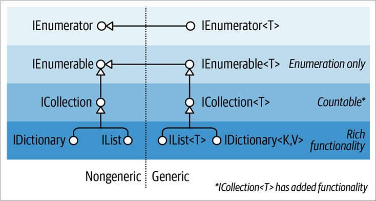
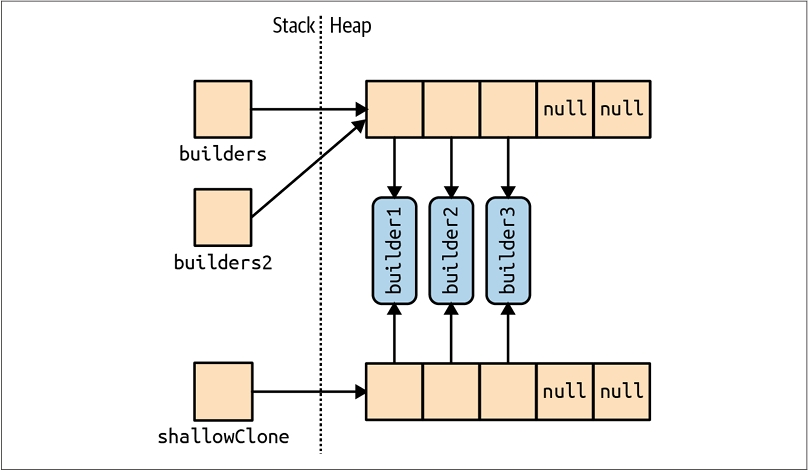
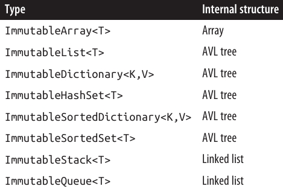

فصل هفتم: مجموعهها (Collections) 📚
.NET یک مجموعه استاندارد از نوعها را برای ذخیرهسازی و مدیریت مجموعهای از اشیاء ارائه میدهد. این نوعها شامل لیستهای قابل تغییر اندازه (resizable lists)، لیستهای پیوندی (linked lists)، دیکشنریهای مرتب و نامرتب (sorted و unsorted dictionaries) و همچنین آرایهها (arrays) هستند. از بین اینها، تنها آرایهها بخشی از زبان C# را تشکیل میدهند؛ بقیه مجموعهها فقط کلاسهایی هستند که میتوانید مانند هر کلاس دیگری نمونهسازی (instantiate) کنید.
میتوانیم نوعها در BCL داتنت برای مجموعهها را به دستههای زیر تقسیم کنیم:
• اینترفیسهایی که پروتکلهای استاندارد مجموعه را تعریف میکنند
• کلاسهای آماده برای استفاده در مجموعهها (لیستها، دیکشنریها و غیره)
• کلاسهای پایه برای نوشتن مجموعههای مخصوص برنامه
این فصل هر یک از این دستهها را پوشش میدهد، بهعلاوه یک بخش اضافی درباره نوعهایی که برای تعیین برابری و ترتیب عناصر استفاده میشوند، ارائه میکند.
فضاهای نام (namespaces) مربوط به مجموعهها به شرح زیر هستند:

شمارهگذاری (Enumeration) 🔢
در علوم کامپیوتر، مجموعههای مختلفی وجود دارند که از ساختارهای داده ساده مانند آرایهها (arrays) یا لیستهای پیوندی (linked lists)، تا ساختارهای پیچیدهتر مانند درختهای قرمز/سیاه (red/black trees) و هشتجدولها (hashtables) را شامل میشوند.
اگرچه پیادهسازی داخلی و ویژگیهای خارجی این ساختارهای داده بسیار متفاوت است، اما توانایی پیمایش (traverse) محتویات مجموعه، نیاز تقریباً جهانی است. BCL داتنت این نیاز را از طریق یک جفت اینترفیس (IEnumerable و IEnumerator و نسخههای Generic آنها) پشتیبانی میکند که به ساختارهای داده مختلف اجازه میدهد یک API مشترک برای پیمایش ارائه دهند.
این اینترفیسها بخشی از مجموعه بزرگتری از اینترفیسهای مجموعه هستند که در شکل ۷-۱ نشان داده شدهاند.

IEnumerable و IEnumerator 🔄
اینترفیس IEnumerator پروتکل پایه و سطح پایین را تعریف میکند که با آن عناصر یک مجموعه بهصورت پیشرونده (forward-only) پیمایش یا شمارهگذاری (enumerate) میشوند. تعریف آن به صورت زیر است:
public interface IEnumerator
{
bool MoveNext();
object Current { get; }
void Reset();
}
متد MoveNext عنصر فعلی یا «کرسر» (cursor) را به موقعیت بعدی منتقل میکند و اگر دیگر عنصری در مجموعه وجود نداشته باشد، مقدار false برمیگرداند. Current عنصری را که در موقعیت فعلی قرار دارد برمیگرداند (معمولاً از نوع object به نوع خاصتر تبدیل میشود). قبل از دسترسی به اولین عنصر، حتماً باید MoveNext فراخوانی شود — این کار اجازه میدهد تا مجموعه خالی نیز مدیریت شود. متد Reset، در صورت پیادهسازی، کرسر را به ابتدای مجموعه بازمیگرداند تا امکان پیمایش مجدد فراهم شود. وجود Reset بیشتر برای سازگاری با Component Object Model (COM) است؛ فراخوانی مستقیم آن معمولاً اجتناب میشود چون همیشه پشتیبانی نمیشود و به طور کلی لازم نیست، زیرا ایجاد یک نمونه جدید از enumerator اغلب سادهتر است.
معمولاً مجموعهها خودشان enumerator را پیادهسازی نمیکنند؛ بلکه enumerator را از طریق اینترفیس IEnumerable فراهم میکنند:
public interface IEnumerable
{
IEnumerator GetEnumerator();
}
با تعریف یک متد که یک enumerator بازمیگرداند، IEnumerable انعطافپذیری ایجاد میکند تا منطق تکرار (iteration) به کلاس دیگری سپرده شود. همچنین این به این معنی است که چند مصرفکننده میتوانند همزمان مجموعه را پیمایش کنند بدون اینکه با یکدیگر تداخل داشته باشند. میتوان IEnumerable را «IEnumeratorProvider» در نظر گرفت، و این ابتداییترین اینترفیس است که کلاسهای مجموعه پیادهسازی میکنند.
نمونه زیر استفاده سطح پایین از IEnumerable و IEnumerator را نشان میدهد:
string s = "Hello";
// چون رشته String اینترفیس IEnumerable را پیادهسازی میکند، میتوانیم GetEnumerator را فراخوانی کنیم:
IEnumerator rator = s.GetEnumerator();
while (rator.MoveNext())
{
char c = (char) rator.Current;
Console.Write(c + ".");
}
// خروجی: H.e.l.l.o.
با این حال، بهندرت پیش میآید که متدها روی enumerator به این شکل فراخوانی شوند، زیرا C# یک میانبر نحوی فراهم میکند: دستور foreach. مثال بالا با استفاده از foreach به شکل زیر بازنویسی میشود:
string s = "Hello"; // کلاس String اینترفیس IEnumerable را پیادهسازی میکند
foreach (char c in s)
Console.Write(c + ".");
IEnumerable<T> و IEnumerator<T> 🧩
IEnumerator و IEnumerable تقریباً همیشه همراه با نسخههای Generic خود پیادهسازی میشوند:
public interface IEnumerator<T> : IEnumerator, IDisposable
{
T Current { get; }
}
public interface IEnumerable<T> : IEnumerable
{
IEnumerator<T> GetEnumerator();
}
با تعریف نسخهای نوعدار (typed) از Current و GetEnumerator، این اینترفیسها ایمنی نوع ایستا (static type safety) را تقویت میکنند، از سربار boxing در عناصر نوع مقدار (value-type) جلوگیری میکنند و برای مصرفکننده راحتتر هستند. آرایهها بهصورت خودکار IEnumerable<T> را پیادهسازی میکنند (که T نوع عضو آرایه است).
به لطف ایمنی نوع ایستا، فراخوانی متد زیر با آرایهای از کاراکترها باعث ایجاد خطای زمان کامپایل میشود:
void Test (IEnumerable<int> numbers) { ... }
یک روش استاندارد در کلاسهای مجموعه این است که IEnumerable<T> را بهصورت عمومی (public) نمایش دهند و IEnumerable غیر Generic را از طریق پیادهسازی صریح اینترفیس (explicit interface implementation) «مخفی» کنند. این کار به این دلیل است که اگر مستقیماً GetEnumerator() فراخوانی شود، یک IEnumerator<T> ایمن از نظر نوع بازگردانده شود.
با این حال، گاهی این قانون برای سازگاری با نسخههای قدیمی شکسته میشود (زیرا Genericها قبل از C# 2.0 وجود نداشتند). یک مثال خوب آرایهها هستند — اینها باید IEnumerator غیر Generic (یا همان نسخه «کلاسیک») را برگردانند تا کدهای قبلی خراب نشوند. برای به دست آوردن IEnumerator<T> Generic، باید نوع را به صورت صریح تبدیل (cast) کنید:
int[] data = { 1, 2, 3 };
var rator = ((IEnumerable<int>)data).GetEnumerator();
خوشبختانه به لطف دستور foreach، به ندرت نیاز است چنین کدی نوشته شود.
IEnumerable
IEnumerator<T> از IDisposable ارثبری میکند. این امکان را به enumerator میدهد که به منابعی مانند اتصال به پایگاه داده (database connections) دسترسی داشته باشد و اطمینان حاصل کند که این منابع پس از اتمام یا قطع پیمایش آزاد میشوند. دستور foreach این نکته را تشخیص میدهد و عبارت زیر را:
foreach (var element in somethingEnumerable) { ... }
به معادل منطقی زیر تبدیل میکند:
using (var rator = somethingEnumerable.GetEnumerator())
while (rator.MoveNext())
{
var element = rator.Current;
...
}
بلوک using تضمین میکند که منابع به درستی Dispose شوند — درباره IDisposable در فصل ۱۲ بیشتر توضیح داده میشود.
استفاده از اینترفیسهای غیر Generic ❓
با توجه به ایمنی نوع اضافی که اینترفیسهای مجموعه Generic مانند IEnumerable<T> ارائه میدهند، این سؤال مطرح میشود: آیا واقعاً نیاز به استفاده از IEnumerable غیر Generic (یا ICollection یا IList) وجود دارد؟
در مورد IEnumerable، باید این اینترفیس را همراه با IEnumerable<T> پیادهسازی کنید، زیرا نسخه Generic از نسخه غیر Generic ارثبری میکند. با این حال، بسیار نادر است که بخواهید این اینترفیسها را از ابتدا پیادهسازی کنید؛ در اکثر موارد میتوانید از روشهای سطح بالاتر مانند iterator methods، Collection<T> و LINQ استفاده کنید.
بهعنوان مصرفکننده 🔍
در اکثر موارد، میتوانید بهطور کامل با اینترفیسهای Generic کار کنید. با این حال، اینترفیسهای غیر Generic هنوز گاهی مفید هستند، زیرا توانایی ارائه یکپارچگی نوع برای مجموعهها با همه نوع عناصر را دارند.
برای مثال، متد زیر تعداد عناصر موجود در هر مجموعهای را بهصورت بازگشتی میشمارد:
public static int Count(IEnumerable e)
{
int count = 0;
foreach (object element in e)
{
var subCollection = element as IEnumerable;
if (subCollection != null)
count += Count(subCollection);
else
count++;
}
return count;
}
چون C# با اینترفیسهای Generic امکان covariance را ارائه میدهد، ممکن است فکر کنید میتوانستیم به جای آن IEnumerable<object> دریافت کنیم. اما این روش با عناصر نوع مقدار (value-type) و مجموعههای قدیمی که IEnumerable<T> را پیادهسازی نکردهاند، شکست میخورد — مثالی از این نوع، ControlCollection در Windows Forms است.
⚠️ نکته: در مثال بالا، ارجاعات چرخهای (cyclic references) میتوانند باعث بازگشت نامتناهی و کرش شدن برنامه شوند. سادهترین راه حل، استفاده از
HashSetاست (به بخش "HashSetو SortedSet " در صفحه ۳۹۲ مراجعه کنید).
پیادهسازی اینترفیسهای Enumeration 🛠️
ممکن است بخواهید IEnumerable یا IEnumerable<T> را به یکی یا چند دلیل زیر پیادهسازی کنید:
- پشتیبانی از دستور
foreach - همکاری با هر چیزی که مجموعه استاندارد انتظار دارد
- رعایت نیازمندیهای یک اینترفیس مجموعه پیشرفتهتر
- پشتیبانی از collection initializers
برای پیادهسازی IEnumerable/IEnumerable<T>، باید یک enumerator ارائه دهید. سه روش برای انجام این کار وجود دارد:
- اگر کلاس، مجموعه دیگری را wrapper میکند، با بازگرداندن enumerator مجموعه داخلی
- از طریق یک iterator با استفاده از
yield return - با ایجاد نمونهای از پیادهسازی خود
IEnumerator/IEnumerator<T>
نمونه استفاده از iterator با yield return ✨
public class MyCollection : IEnumerable
{
int[] data = { 1, 2, 3 };
public IEnumerator GetEnumerator()
{
foreach (int i in data)
yield return i;
}
}
در نگاه اول، به نظر میرسد GetEnumerator هیچ enumeratorای باز نمیگرداند! اما کامپایلر هنگام پردازش yield return، یک کلاس enumerator پنهان میسازد و GetEnumerator را طوری تغییر میدهد که آن کلاس را نمونهسازی و بازگرداند.
این روش ساده، قدرتمند و در پیادهسازی LINQ-to-Objects بسیار استفاده میشود.
پیادهسازی نسخه Generic 🧩
public class MyGenCollection : IEnumerable<int>
{
int[] data = { 1, 2, 3 };
public IEnumerator<int> GetEnumerator()
{
foreach (int i in data)
yield return i;
}
// پیادهسازی صریح نسخه غیر Generic:
IEnumerator IEnumerable.GetEnumerator() => GetEnumerator();
}
چون IEnumerable<T> از IEnumerable ارثبری میکند، باید هر دو نسخه Generic و غیر Generic از GetEnumerator پیادهسازی شوند. نسخه غیر Generic معمولاً بهصورت صریح (explicit) پیادهسازی میشود تا بتواند نسخه Generic را فراخوانی کند، زیرا IEnumerator<T> از IEnumerator ارثبری میکند.
پیادهسازی مستقیم IEnumerator 🔧
در برخی موارد، میتوانید یک کلاس بنویسید که مستقیماً IEnumerator را پیادهسازی کند. مثال زیر یک مجموعه ثابت با اعداد 1، 2 و 3 را نشان میدهد:
public class MyIntList : IEnumerable
{
int[] data = { 1, 2, 3 };
public IEnumerator GetEnumerator() => new Enumerator(this);
class Enumerator : IEnumerator
{
MyIntList collection;
int currentIndex = -1;
public Enumerator(MyIntList items) => this.collection = items;
public object Current
{
get
{
if (currentIndex == -1)
throw new InvalidOperationException("Enumeration not started!");
if (currentIndex == collection.data.Length)
throw new InvalidOperationException("Past end of list!");
return collection.data[currentIndex];
}
}
public bool MoveNext()
{
if (currentIndex >= collection.data.Length - 1) return false;
return ++currentIndex < collection.data.Length;
}
public void Reset() => currentIndex = -1;
}
}
پیادهسازی Reset اختیاری است — میتوانید به جای آن NotSupportedException پرتاب کنید.
پیادهسازی Generic مستقیم ✅
class MyIntList : IEnumerable<int>
{
int[] data = { 1, 2, 3 };
public IEnumerator<int> GetEnumerator() => new Enumerator(this);
IEnumerator IEnumerable.GetEnumerator() => new Enumerator(this);
class Enumerator : IEnumerator<int>
{
int currentIndex = -1;
MyIntList collection;
public Enumerator(MyIntList items) => collection = items;
public int Current => collection.data[currentIndex];
object IEnumerator.Current => Current;
public bool MoveNext() => ++currentIndex < collection.data.Length;
public void Reset() => currentIndex = -1;
// از آنجا که نیاز به Dispose نداریم، بهتر است صریح پیادهسازی شود تا از رابط عمومی مخفی بماند
void IDisposable.Dispose() {}
}
}
نسخه Generic سریعتر است زیرا IEnumerator<int>.Current نیاز به casting از int به object ندارد و سربار boxing را حذف میکند.
اینترفیسهای ICollection و IList 🗂️
اگرچه اینترفیسهای Enumeration یک پروتکل برای پیمایش فقط به جلو (forward-only) در مجموعهها فراهم میکنند، اما مکانیزمی برای تعیین اندازه مجموعه، دسترسی به عضو از طریق اندیس، یا تغییر محتویات مجموعه ارائه نمیدهند. برای چنین قابلیتهایی، داتنت اینترفیسهای ICollection، IList و IDictionary را تعریف کرده است. هرکدام از این اینترفیسها نسخههای Generic و Non-Generic دارند؛ با این حال، نسخههای غیر Generic عمدتاً برای پشتیبانی از کدهای قدیمی وجود دارند.
شکل ۷-۱ سلسله مراتب ارثبری این اینترفیسها را نشان داد. سادهترین راه برای خلاصهسازی آنها به شرح زیر است:
IEnumerable<T>(وIEnumerable)
حداقل قابلیتها را فراهم میکند (فقط پیمایش)ICollection<T>(وICollection)
قابلیتهای متوسط را ارائه میدهد (مثلاً ویژگیCount)IList<T>/IDictionary<K,V>و نسخههای غیر Generic آنها
حداکثر قابلیتها را ارائه میدهند (شامل دسترسی «تصادفی» به عناصر با اندیس یا کلید)
به ندرت پیش میآید که نیاز داشته باشید هر یک از این اینترفیسها را خودتان پیادهسازی کنید. در اکثر مواقع، هنگام نوشتن یک کلاس مجموعه، میتوانید به جای آن از subclass کردن Collection<T> استفاده کنید (به بخش "Customizable Collections and Proxies" در صفحه ۴۰۱ مراجعه کنید). LINQ نیز گزینه دیگری ارائه میدهد که بسیاری از سناریوها را پوشش میدهد.
نسخههای Generic و Non-Generic تفاوتهایی فراتر از انتظار معمول دارند، بهویژه در مورد ICollection. این تفاوتها عمدتاً تاریخی هستند: چون Genericها بعداً وارد شدند، اینترفیسهای Generic با بهرهمندی از تجربه پیشین توسعه یافتند و اعضای متفاوت (و بهتری) انتخاب شدند.
به همین دلیل:
ICollection<T>ازICollectionارثبری نمیکندIList<T>ازIListارثبری نمیکندIDictionary<TKey, TValue>ازIDictionaryارثبری نمیکند
البته، یک کلاس مجموعه میتواند هر دو نسخه یک اینترفیس را پیادهسازی کند اگر مفید باشد (که اغلب مفید است).
دلیل ظریفتر دیگری که باعث شده IList<T> از IList ارثبری نکند این است که اگر این کار انجام شود، تبدیل به IList<T> موجب بازگشت یک اینترفیس با اعضای Add(T) و Add(object) میشود، که در واقع ایمنی نوع ایستا (static type safety) را نقض میکند، زیرا میتوانستید با هر نوع شیئی Add را فراخوانی کنید.
این بخش شامل چه مواردی است 📖
این بخش به ICollection<T> و IList<T> و نسخههای غیر Generic آنها میپردازد؛ دیکشنریها در صفحه ۳۹۴ تحت پوشش قرار دارند.
در کتابخانههای داتنت، هیچ منطق یکپارچهای برای استفاده از واژههای "collection" و "list" وجود ندارد.
برای مثال، چون IList<T> نسخهای با قابلیت بیشتر از ICollection<T> است، ممکن است انتظار داشته باشید کلاس List<T> بهطور مشابه از کلاس Collection<T> کاربردیتر باشد، اما اینگونه نیست. بهتر است این دو واژه را بهطور کلی مترادف در نظر بگیرید، مگر آنکه نوع خاصی مدنظر باشد.
ICollection و ICollection 📦
ICollection<T> اینترفیس استاندارد برای مجموعههای شمارشپذیر است. این اینترفیس امکان:
- تعیین اندازه مجموعه (
Count) - بررسی وجود یک آیتم در مجموعه (
Contains) - کپی مجموعه به آرایه (
ToArray) - تعیین اینکه مجموعه فقط خواندنی است (
IsReadOnly)
و برای مجموعههای قابل نوشتن، امکان افزودن (Add)، حذف (Remove) و پاک کردن (Clear) عناصر را نیز فراهم میکند.
همچنین چون از IEnumerable<T> ارثبری میکند، میتوان از دستور foreach نیز برای پیمایش آن استفاده کرد:
public interface ICollection<T> : IEnumerable<T>, IEnumerable
{
int Count { get; }
bool Contains(T item);
void CopyTo(T[] array, int arrayIndex);
bool IsReadOnly { get; }
void Add(T item);
bool Remove(T item);
void Clear();
}
نسخه غیر Generic ICollection مشابه است و مجموعهای شمارشپذیر ارائه میدهد، اما قابلیت تغییر محتویات مجموعه یا بررسی عضویت عناصر را ندارد:
public interface ICollection : IEnumerable
{
int Count { get; }
bool IsSynchronized { get; }
object SyncRoot { get; }
void CopyTo(Array array, int index);
}
این نسخه غیر Generic همچنین ویژگیهایی برای کمک به سینک کردن (synchronization) دارد (فصل ۱۴) — این ویژگیها در نسخه Generic حذف شدند زیرا Thread Safety دیگر ذاتاً بخشی از مجموعهها محسوب نمیشود.
هر دو اینترفیس نسبتاً ساده برای پیادهسازی هستند. اگر بخواهید یک ICollection<T> فقط خواندنی پیادهسازی کنید، متدهای Add، Remove و Clear باید NotSupportedException پرتاب کنند.
معمولاً این اینترفیسها همراه با IList یا IDictionary پیادهسازی میشوند.
اینترفیسهای IList
IList<T> اینترفیس استاندارد برای مجموعههایی است که میتوان به عناصر آنها با موقعیت (اندیس) دسترسی داشت. علاوه بر قابلیتهایی که از ICollection<T> و IEnumerable<T> به ارث برده، این اینترفیس امکان خواندن و نوشتن عنصر با استفاده از اندیس و درج/حذف عنصر بر اساس موقعیت را نیز فراهم میکند:
public interface IList<T> : ICollection<T>, IEnumerable<T>, IEnumerable
{
T this[int index] { get; set; }
int IndexOf(T item);
void Insert(int index, T item);
void RemoveAt(int index);
}
متد IndexOf جستجوی خطی (linear search) در لیست انجام میدهد و اگر عنصر مشخص شده پیدا نشود، مقدار -1 برمیگرداند.
نسخه غیر Generic IList اعضای بیشتری دارد، زیرا از ICollection کمتری ارثبری میکند:
public interface IList : ICollection, IEnumerable
{
object this[int index] { get; set; }
bool IsFixedSize { get; }
bool IsReadOnly { get; }
int Add(object value);
void Clear();
bool Contains(object value);
int IndexOf(object value);
void Insert(int index, object value);
void Remove(object value);
void RemoveAt(int index);
}
در نسخه غیر Generic، متد Add یک عدد صحیح (int) برمیگرداند که نشاندهنده اندیس عنصر اضافهشده است. در مقابل، متد Add در ICollection<T> دارای نوع بازگشتی void است.
کلاس عمومی List<T> نمونه بارز پیادهسازی هر دو اینترفیس IList<T> و IList است. آرایههای C# نیز هر دو نسخه Generic و Non-Generic IList را پیادهسازی میکنند، اگرچه متدهایی که برای اضافه یا حذف عناصر هستند، از طریق پیادهسازی صریح اینترفیس پنهان شدهاند و در صورت فراخوانی، NotSupportedException پرتاب میکنند.
⚠️ اگر تلاش کنید به یک آرایه چندبعدی از طریق ایندکسر
IListدسترسی پیدا کنید، یکArgumentExceptionپرتاب خواهد شد. این نکته ممکن است هنگام نوشتن متدهایی مانند زیر مشکلساز شود:
public object FirstOrNull(IList list)
{
if (list == null || list.Count == 0) return null;
return list[0];
}
این کد ممکن است ظاهراً بیخطا باشد، اما اگر با آرایه چندبعدی فراخوانی شود، یک استثنا پرتاب خواهد کرد. میتوان در زمان اجرا بررسی کرد که آیا آرایه چندبعدی است یا خیر:
list.GetType().IsArray && list.GetType().GetArrayRank() > 1
IReadOnlyCollection و IReadOnlyList 🔒
.NET اینترفیسهای مجموعه و لیست فقط خواندنی نیز دارد که فقط اعضای لازم برای عملیات فقط خواندنی را ارائه میدهند:
public interface IReadOnlyCollection<out T> : IEnumerable<T>, IEnumerable
{
int Count { get; }
}
public interface IReadOnlyList<out T> : IReadOnlyCollection<T>,
IEnumerable<T>, IEnumerable
{
T this[int index] { get; }
}
از آنجا که پارامتر نوع (T) تنها در موقعیت خروجی استفاده میشود، به صورت Covariant علامتگذاری شده است. این امکان را میدهد که مثلاً لیستی از گربهها به عنوان یک لیست فقط خواندنی از حیوانات تلقی شود.
در مقابل، T در ICollection<T> و IList<T> Covariant نیست، زیرا در هر دو موقعیت ورودی و خروجی استفاده میشود.
این اینترفیسها نمایی فقط خواندنی از یک مجموعه یا لیست ارائه میکنند؛ پیادهسازی واقعی ممکن است هنوز قابل نوشتن باشد. اکثر مجموعههای قابل تغییر (Mutable) هم اینترفیسهای فقط خواندنی و هم خواندنی/نوشتنی را پیادهسازی میکنند.
علاوه بر امکان کار با مجموعهها به صورت Covariant، اینترفیسهای فقط خواندنی اجازه میدهند یک کلاس نمایی فقط خواندنی از یک مجموعه خصوصی قابل نوشتن را به صورت عمومی ارائه کند. این موضوع در بخش ReadOnlyCollection<T> در صفحه ۴۰۶ نشان داده شده است.
IReadOnlyList<T>با نوع Windows RuntimeIVectorView<T>مطابقت دارد.
کلاس Array 🗃️
کلاس Array کلاس پایه ضمنی (implicit) برای تمام آرایههای تکبعدی و چندبعدی است و یکی از اساسیترین نوعها است که اینترفیسهای استاندارد مجموعه را پیادهسازی میکند.
کلاس Array یکپارچگی نوع را فراهم میکند، بنابراین یک مجموعه از متدهای مشترک برای تمام آرایهها، صرفنظر از اعلان یا نوع عناصر، در دسترس است.
از آنجا که آرایهها بسیار اساسی هستند، C# سینتکس ویژهای برای اعلان و مقداردهی اولیه آنها ارائه میدهد (که در فصلهای ۲ و ۳ توضیح داده شد). وقتی آرایهای با سینتکس C# اعلام میشود، CLR به طور ضمنی کلاس Array را زیرنوعدهی میکند و یک Pseudo-Type مناسب برای ابعاد و نوع عناصر آرایه ایجاد میکند. این Pseudo-Type اینترفیسهای Generic نوعدار را پیادهسازی میکند، مانند IList<string>.
CLR همچنین هنگام ساخت آرایهها به آنها به صورت ویژه نگاه میکند و فضای متوالی در حافظه برای آنها اختصاص میدهد. این کار باعث میشود دسترسی با اندیس به آرایهها بسیار کارآمد باشد، اما اجازه تغییر اندازه بعد از ساخت را نمیدهد.
کلاس Array اینترفیسهای مجموعه را تا IList<T> پیادهسازی میکند، هم در نسخه Generic و هم غیر Generic. خود IList<T> به صورت صریح پیادهسازی شده تا متدهایی مانند Add و Remove که برای آرایههای با طول ثابت نامناسب هستند، از رابط عمومی Array پنهان بمانند و در صورت فراخوانی استثنا پرتاب کنند.
کلاس Array یک متد استاتیک Resize نیز ارائه میدهد، اما این متد با ایجاد یک آرایه جدید و کپی کردن هر عنصر کار میکند. این روش نه تنها ناکارآمد است، بلکه مراجع به آرایه اصلی در بخشهای دیگر برنامه همچنان به نسخه اولیه اشاره خواهند کرد. راه حل بهتر برای مجموعههای قابل تغییر، استفاده از کلاس List<T> است (که در بخش بعدی توضیح داده میشود).
آرایه میتواند شامل عناصر Value-Type یا Reference-Type باشد. عناصر Value-Type در محل آرایه ذخیره میشوند، بنابراین یک آرایه از سه عدد صحیح طولانی (هر کدام ۸ بایت) ۲۴ بایت حافظه متوالی اشغال میکند. اما عنصر Reference-Type تنها به اندازه یک مرجع فضای آرایه را اشغال میکند (۴ بایت در محیط ۳۲ بیتی یا ۸ بایت در محیط ۶۴ بیتی).
شکل ۷-۲ تأثیر این موضوع را در حافظه نشان میدهد:
StringBuilder[] builders = new StringBuilder[5];
builders[0] = new StringBuilder("builder1");
builders[1] = new StringBuilder("builder2");
builders[2] = new StringBuilder("builder3");
long[] numbers = new long[3];
numbers[0] = 12345;
numbers[1] = 54321;

چون Array یک کلاس است، آرایهها همیشه خودشان نوع مرجع (Reference Type) هستند—صرفنظر از نوع عناصر آرایه. این بدان معناست که دستور زیر:
arrayB = arrayA
منجر به ایجاد دو متغیری میشود که به همان آرایه ارجاع میدهند.
به همین ترتیب، دو آرایه مجزا همیشه در آزمون برابری شکست خواهند خورد، مگر اینکه از یک مقایسهکننده برابری ساختاری (Structural Equality Comparer) استفاده کنید که هر عنصر آرایه را مقایسه میکند:
object[] a1 = { "string", 123, true };
object[] a2 = { "string", 123, true };
Console.WriteLine(a1 == a2); // False
Console.WriteLine(a1.Equals(a2)); // False
IStructuralEquatable se1 = a1;
Console.WriteLine(se1.Equals(a2, StructuralComparisons.StructuralEqualityComparer)); // True
آرایهها میتوانند با فراخوانی متد Clone کپی شوند:
arrayB = arrayA.Clone();
اما این یک کپی سطحی (Shallow Clone) ایجاد میکند، یعنی فقط حافظهای که خود آرایه اشغال کرده است کپی میشود. اگر آرایه شامل اشیاء Value-Type باشد، خود مقادیر کپی میشوند؛ اما اگر شامل اشیاء Reference-Type باشد، فقط ارجاعات (References) کپی میشوند، در نتیجه دو آرایهای خواهید داشت که اعضای آنها به همان اشیاء اشاره میکنند.
شکل ۷-۳ اثر این موضوع را هنگام افزودن کد زیر به مثال نشان میدهد:
StringBuilder[] builders2 = builders;
StringBuilder[] shallowClone = (StringBuilder[]) builders.Clone();

برای ایجاد یک کپی عمیق (Deep Copy)—که در آن زیر اشیاء Reference-Type نیز تکرار میشوند—باید از آرایه عبور کرده و هر عنصر را بهصورت دستی کپی کنید. همان قوانین برای سایر انواع مجموعهها در .NET نیز صدق میکند.
اگرچه Array عمدتاً برای استفاده با ایندکسهای ۳۲ بیتی طراحی شده، اما از ایندکسهای ۶۴ بیتی نیز پشتیبانی محدودی دارد (که به صورت تئوری امکان دسترسی به تا $2^{64}$ عنصر را میدهد) از طریق چندین متدی که هم Int32 و هم Int64 را میپذیرند. این اورلودها در عمل بیفایده هستند، زیرا CLR اجازه نمیدهد هیچ شیء—از جمله آرایهها—بزرگتر از دو گیگابایت باشد (چه در محیط ۳۲ بیتی و چه ۶۴ بیتی).
بسیاری از متدهایی که انتظار دارید در کلاس Array متد نمونه (Instance Method) باشند، در واقع متدهای استاتیک هستند. این تصمیم طراحی کمی عجیب است و به این معناست که هنگام جستجوی یک متد در Array باید هم متدهای استاتیک و هم متدهای نمونه را بررسی کنید.
ایجاد و ایندکسگذاری آرایهها 🗂️
سادهترین راه برای ایجاد و ایندکس کردن آرایهها، استفاده از ساختارهای زبانی C# است:
int[] myArray = { 1, 2, 3 };
int first = myArray[0];
int last = myArray[myArray.Length - 1];
همچنین میتوانید یک آرایه را پویا (Dynamic) با استفاده از Array.CreateInstance بسازید. این روش به شما امکان میدهد نوع عنصر و بعد (Rank) را در زمان اجرا مشخص کنید و همچنین آرایههای غیر صفر-مبنا ایجاد کنید. آرایههای غیر صفر-مبنا با .NET Common Language Specification (CLS) سازگار نیستند و نباید بهعنوان اعضای عمومی در کتابخانههایی که ممکن است توسط برنامهای در F# یا Visual Basic استفاده شوند، ارائه شوند.
متدهای GetValue و SetValue اجازه میدهند عناصر آرایههای پویا یا معمولی را دسترسی یا مقداردهی کنید:
// ایجاد آرایه رشتهای با 2 عنصر
Array a = Array.CreateInstance(typeof(string), 2);
a.SetValue("hi", 0); // → a[0] = "hi";
a.SetValue("there", 1); // → a[1] = "there";
string s = (string)a.GetValue(0); // → s = a[0];
// تبدیل به آرایه C#:
string[] cSharpArray = (string[])a;
string s2 = cSharpArray[0];
آرایههای صفر-مبنا که بهصورت پویا ایجاد میشوند، میتوانند به آرایهای از نوع مشابه یا سازگار در C# تبدیل شوند. برای مثال، اگر Apple از Fruit ارثبری کند، میتوان Apple[] را به Fruit[] تبدیل کرد. این مسئله دلیل استفاده از کلاس Array به جای object[] برای نوع یکنواخت را توضیح میدهد، زیرا object[] با آرایههای چندبعدی و Value-Type سازگار نیست.
GetValue و SetValue همچنین روی آرایههای ساخته شده توسط کامپایلر نیز کار میکنند و زمانی که میخواهید متدی بنویسید که با هر نوع و بعدی از آرایه کار کند مفید هستند. برای آرایههای چندبعدی، آنها آرایهای از ایندکسها میپذیرند:
public object GetValue(params int[] indices)
public void SetValue(object value, params int[] indices)
مثال زیر، اولین عنصر هر آرایهای را بدون توجه به بعد آن چاپ میکند:
void WriteFirstValue(Array a)
{
Console.Write(a.Rank + "-dimensional; ");
int[] indexers = new int[a.Rank]; // خودکار صفر-مبنا
Console.WriteLine("First value is " + a.GetValue(indexers));
}
void Demo()
{
int[] oneD = { 1, 2, 3 };
int[,] twoD = { {5,6}, {8,9} };
WriteFirstValue(oneD); // 1-dimensional; first value is 1
WriteFirstValue(twoD); // 2-dimensional; first value is 5
}
برای آرایههایی با نوع ناشناخته اما بعد مشخص، Generics راهکار سادهتر و کارآمدتری ارائه میدهند:
void WriteFirstValue<T>(T[] array)
{
Console.WriteLine(array[0]);
}
متد SetValue در صورت ناسازگار بودن نوع عنصر با آرایه، استثنا پرتاب میکند.
هنگام ایجاد آرایه—چه با سینتکس زبان و چه با Array.CreateInstance—عناصر آرایه بهصورت خودکار به مقدار پیشفرضشان مقداردهی میشوند. برای آرایههای Reference-Type، این مقداردهی با null انجام میشود؛ برای آرایههای Value-Type، اعضا به صورت بیتبهبیت صفر میشوند.
کلاس Array همچنین متد Clear را ارائه میدهد تا بهصورت اختیاری آرایه را پاکسازی کند:
public static void Clear(Array array, int index, int length);
این متد اندازه آرایه را تغییر نمیدهد، بر خلاف ICollection<T>.Clear که تعداد عناصر را به صفر کاهش میدهد.
پیمایش آرایهها 🔄
آرایهها بهراحتی با foreach پیمایش میشوند:
int[] myArray = { 1, 2, 3 };
foreach (int val in myArray)
Console.WriteLine(val);
همچنین میتوان از متد استاتیک Array.ForEach استفاده کرد:
public static void ForEach<T>(T[] array, Action<T> action);
public delegate void Action<T>(T obj);
مثال بازنویسی شده با Array.ForEach:
Array.ForEach(new[] { 1, 2, 3 }, Console.WriteLine);
و در C# 12، میتوان این را سادهتر کرد:
Array.ForEach([1, 2, 3], Console.WriteLine);
طول و بعد آرایه 📏
کلاس Array متدها و ویژگیهای زیر را برای پرسوجو درباره طول و بعد آرایه ارائه میدهد:
public int GetLength(int dimension);
public long GetLongLength(int dimension);
public int Length { get; }
public long LongLength { get; }
public int GetLowerBound(int dimension);
public int GetUpperBound(int dimension);
public int Rank { get; } // تعداد بعدهای آرایه را باز میگرداند
GetLengthوGetLongLengthطول یک بعد مشخص (0 برای آرایههای تکبعدی) را باز میگردانند.LengthوLongLengthتعداد کل عناصر آرایه را در تمامی ابعاد بازمیگردانند.GetLowerBoundوGetUpperBoundدر آرایههای غیر صفر-مبنا کاربرد دارند.GetUpperBoundهمان نتیجهیGetLowerBound + GetLengthبرای یک بعد مشخص را بازمیگرداند.
جستجو در آرایه 🔍
کلاس Array مجموعهای از متدها را برای پیدا کردن عناصر در آرایههای تکبعدی ارائه میدهد:
-
متدهای BinarySearch
برای جستجوی سریع در یک آرایه مرتب برای یک عنصر مشخص. -
متدهای IndexOf / LastIndexOf
برای جستجوی آرایههای نامرتب برای یک عنصر خاص. -
متدهای Find / FindLast / FindIndex / FindLastIndex / FindAll / Exists / TrueForAll
برای جستجوی آرایههای نامرتب بر اساس معیار یک Predicate.
نکات مهم:
-
هیچیک از متدهای جستجوی آرایه، در صورت پیدا نشدن عنصر، استثنا پرتاب نمیکنند.
- متدهایی که int بازمیگردانند، مقدار
-1بازمیگردانند (فرض بر صفر-مبنا بودن آرایه). - متدهایی که نوع Generic بازمیگردانند، مقدار پیشفرض آن نوع را برمیگردانند (مثلاً
0برایintیاnullبرایstring).
- متدهایی که int بازمیگردانند، مقدار
-
BinarySearch سریع است، اما فقط روی آرایههای مرتب کار میکند و نیاز دارد عناصر ترتیبپذیر باشند. این متدها میتوانند یک شیء
IComparerیاIComparer<T>دریافت کنند تا ترتیب عناصر را تعیین کند (باید با ترتیبی که هنگام مرتبسازی اولیه استفاده شده، سازگار باشد). در صورت عدم ارائه، الگوریتم مرتبسازی پیشفرض نوع استفاده میشود (براساسIComparable/IComparable<T>). -
IndexOf / LastIndexOf صرفاً آرایه را پیمایش میکنند و موقعیت اولین یا آخرین عنصر مطابق را بازمیگردانند.
-
متدهای مبتنی بر Predicate اجازه میدهند Delegate یا Lambda Expression تصمیم بگیرد که آیا عنصر مشخصی با معیار موردنظر مطابقت دارد یا خیر.
public delegate bool Predicate<T>(T obj);
مثال:
string[] names = { "Rodney", "Jack", "Jill" };
string match = Array.Find(names, ContainsA);
Console.WriteLine(match); // Jack
bool ContainsA(string name) { return name.Contains("a"); }
همان مثال با Lambda Expression:
string[] names = { "Rodney", "Jack", "Jill" };
string match = Array.Find(names, n => n.Contains("a")); // Jack
-
FindAllآرایهای شامل تمام عناصر مطابق با Predicate بازمیگرداند و مشابهEnumerable.WhereدرSystem.Linqاست، با این تفاوت که خروجی به صورت آرایه است، نهIEnumerable<T>. -
Existsباز میگرداندtrueاگر هر عضو آرایه معیار Predicate را برآورده کند، مشابهAnyدرSystem.Linq.Enumerable. -
TrueForAllباز میگرداندtrueاگر همه عناصر معیار Predicate را برآورده کنند، مشابهAllدرSystem.Linq.Enumerable.
مرتبسازی آرایه 🗂️
کلاس Array چندین متد مرتبسازی داخلی دارد:
// مرتبسازی یک آرایه تکبعدی:
public static void Sort<T>(T[] array);
public static void Sort(Array array);
// مرتبسازی جفت آرایهها:
public static void Sort<TKey,TValue>(TKey[] keys, TValue[] items);
public static void Sort(Array keys, Array items);
هر یک از این متدها بهصورت Overload میتوانند پارامترهای زیر را هم بگیرند:
int index→ شروع مرتبسازی از ایندکس مشخصint length→ تعداد عناصر برای مرتبسازیIComparer<T> comparer→ شیء تعیینکننده ترتیب عناصرComparison<T> comparison→ Delegate تعیینکننده ترتیب عناصر
مثال ساده:
int[] numbers = { 3, 2, 1 };
Array.Sort(numbers); // آرایه حالا { 1, 2, 3 }
متدهای جفت آرایهای، عناصر هر دو آرایه را بهصورت همزمان مرتب میکنند و ترتیب را براساس آرایه اول اعمال میکنند:
int[] numbers = { 3, 2, 1 };
string[] words = { "three", "two", "one" };
Array.Sort(numbers, words);
// numbers → { 1, 2, 3 }
// words → { "one", "two", "three" }
⚠️ نکته:
Array.Sortنیاز دارد که عناصر آرایهIComparableرا پیادهسازی کنند. اگر عناصر قابل مقایسه ذاتی نباشند یا بخواهید ترتیب پیشفرض را تغییر دهید، باید Comparison سفارشی یا شیءIComparer<T>ارائه دهید.
مثال با Comparison Delegate:
public delegate int Comparison<T>(T x, T y);
- اگر
xقبل ازyباشد → عدد منفی بازمیگرداند - اگر
xبعد ازyباشد → عدد مثبت بازمیگرداند - اگر برابر باشند →
0بازمیگرداند
مثال عملی:
int[] numbers = { 1, 2, 3, 4, 5 };
Array.Sort(numbers, (x, y) => x % 2 == y % 2 ? 0 : x % 2 == 1 ? -1 : 1);
// numbers → { 1, 3, 5, 2, 4 }
- به جای
Array.Sortمیتوانید از LINQ و متدهایOrderByوThenByاستفاده کنید.
این روش آرایه اصلی را تغییر نمیدهد و خروجی را به صورت یکIEnumerable<T>مرتبشده ارائه میدهد.
معکوس کردن عناصر 🔄
کلاس Array متدهایی برای معکوس کردن تمام یا بخشی از آرایه ارائه میدهد:
public static void Reverse(Array array);
public static void Reverse(Array array, int index, int length);
کپی کردن آرایه 📋
کلاس Array چهار روش برای کپی سطحی دارد: Clone، CopyTo، Copy و ConstrainedCopy
-
CloneوCopyTo→ متدهای نمونهای -
CopyوConstrainedCopy→ متدهای استاتیک -
Clone→ آرایه جدید (سطحی) بازمیگرداند -
CopyToوCopy→ بخش متوالی از آرایه را کپی میکنند- برای آرایههای چندبعدی، باید ایندکس چندبعدی را به ایندکس خطی تبدیل کنید
- مثال: خانه وسط
[1,1]در آرایه 3×3 →1 * 3 + 1 = 4 - محدودههای منبع و مقصد میتوانند همپوشانی داشته باشند بدون مشکل
-
ConstrainedCopy→ عملیات اتمی؛ اگر همه عناصر نتوانند کپی شوند، عملیات بازگردانده میشود -
AsReadOnly→ Wrapper بازمیگرداند که از تغییر عناصر جلوگیری میکند
تبدیل و تغییر اندازه آرایه 🔄📏
کلاس Array متدهایی برای تبدیل عناصر آرایه و تغییر اندازه آرایه ارائه میدهد:
Array.ConvertAll→ یک آرایه جدید از نوعTOutputایجاد میکند و عناصر را با استفاده از Delegate تبدیلکننده کپی میکند.
تعریف Delegate به شکل زیر است:
public delegate TOutput Converter<TInput, TOutput>(TInput input);
مثال:
float[] reals = { 1.3f, 1.5f, 1.8f };
int[] wholes = Array.ConvertAll(reals, r => Convert.ToInt32(r));
// wholes → { 1, 2, 2 }
Array.Resize→ با ایجاد آرایه جدید و کپی عناصر، آرایه را تغییر اندازه میدهد و نتیجه را از طریق پارامتر مرجع بازمیگرداند.
⚠️ توجه: سایر مراجع به آرایه اصلی تغییری نمیکنند.
فضای نام
System.Linqهم تعداد زیادی Extension Method برای تبدیل آرایه ارائه میدهد که خروجی آنIEnumerable<T>است و میتوان دوباره باToArrayبه آرایه تبدیل کرد.
لیستها، صفها، پشتهها و مجموعهها 📚🛒
.NET مجموعهای از کلاسهای مجموعهای آماده ارائه میدهد که رابطهای معرفیشده در این فصل را پیادهسازی میکنند.
این بخش روی مجموعههای شبیه لیست تمرکز دارد و نه مجموعههای دیکشنری، که بعداً در فصل «Dictionaries» بررسی میکنیم.
- برای اکثر کلاسها، میتوانید نسخه Generic یا Non-Generic را انتخاب کنید.
- کلاسهای Generic از نظر انعطافپذیری و عملکرد بهترند و نسخه غیرجنریک معمولاً فقط برای سازگاری با نسخههای قدیمی لازم است.
- از بین این کلاسها،
List<T>پرکاربردترین است.
کلاسهای List و ArrayList 📝
- کلاس Generic
List<T>و Non-GenericArrayListآرایهای پویا از اشیاء فراهم میکنند. ArrayList→ پیادهسازیIListList<T>→ پیادهسازیIListوIList<T>(و نسخه فقط خواندنیIReadOnlyList<T>)
تفاوت با آرایهها: تمام این رابطها عمومی پیادهسازی شدهاند و متدهایی مانند
AddوRemoveمستقیماً قابل استفاده هستند.
جزئیات داخلی
List<T>وArrayListیک آرایه داخلی دارند که هنگام پر شدن، جایگزین با آرایه بزرگتر میشود.- افزودن عنصر → سریع (معمولاً جای خالی در انتها وجود دارد)
- درج عنصر → کند (چون همه عناصر بعد از نقطه درج باید جابجا شوند)
- حذف عنصر → کند، بهخصوص در ابتدای آرایه
- جستجو → سریع با
BinarySearch، در غیر این صورت کند (چون باید همه عناصر بررسی شوند)
اگر
Tیک نوع مقدار (Value Type) باشد،List<T>چندین برابر سریعتر ازArrayListاست، چون از Boxing/Unboxing جلوگیری میکند.
سازندهها و متدهای مهم List<T> ⚙️
public class List<T> : IList<T>, IReadOnlyList<T>
{
public List(); // آرایه خالی
public List(IEnumerable<T> collection); // کپی از مجموعه موجود
public List(int capacity); // مشخص کردن ظرفیت اولیه
// افزودن و درج
public void Add(T item);
public void AddRange(IEnumerable<T> collection);
public void Insert(int index, T item);
public void InsertRange(int index, IEnumerable<T> collection);
// حذف
public bool Remove(T item);
public void RemoveAt(int index);
public void RemoveRange(int index, int count);
public int RemoveAll(Predicate<T> match);
// دسترسی با ایندکس
public T this[int index] { get; set; }
public List<T> GetRange(int index, int count);
public Enumerator<T> GetEnumerator();
// کپی و تبدیل
public T[] ToArray();
public void CopyTo(T[] array);
public void CopyTo(T[] array, int arrayIndex);
public void CopyTo(int index, T[] array, int arrayIndex, int count);
public ReadOnlyCollection<T> AsReadOnly();
public List<TOutput> ConvertAll<TOutput>(Converter<T,TOutput> converter);
// سایر متدها
public void Reverse(); // معکوس کردن ترتیب عناصر
public int Capacity { get; set; } // گسترش آرایه داخلی
public void TrimExcess(); // کاهش آرایه داخلی به اندازه واقعی
public void Clear(); // حذف تمام عناصر، Count=0
}
List<T>همچنین نسخههای نمونهای تمام متدهای جستجو و مرتبسازی آرایه را دارد.
مثال عملی با List 🎯
var words = new List<string>(); // لیست رشتهای
words.Add("melon");
words.Add("avocado");
words.AddRange(["banana", "plum"]);
words.Insert(0, "lemon"); // درج در ابتدا
words.InsertRange(0, ["peach", "nashi"]); // درج چندگانه در ابتدا
words.Remove("melon");
words.RemoveAt(3); // حذف عنصر چهارم
words.RemoveRange(0, 2); // حذف دو عنصر اول
words.RemoveAll(s => s.StartsWith("n")); // حذف تمام رشتهها با شروع 'n'
Console.WriteLine(words[0]); // اولین عنصر
Console.WriteLine(words[words.Count-1]); // آخرین عنصر
foreach(string s in words) Console.WriteLine(s); // تمام عناصر
List<string> subset = words.GetRange(1, 2); // از دوم تا سوم
string[] wordsArray = words.ToArray(); // تبدیل به آرایه
string[] existing = new string[1000];
words.CopyTo(0, existing, 998, 2); // کپی دو عنصر اول به آرایه موجود
List<string> upperCaseWords = words.ConvertAll(s => s.ToUpper());
List<int> lengths = words.ConvertAll(s => s.Length);
تفاوت با ArrayList ⚠️
ArrayList al = new ArrayList();
al.Add("hello");
string first = (string)al[0]; // نیاز به cast
string[] strArr = (string[])al.ToArray(typeof(string));
- چنین castهایی توسط کامپایلر چک نمیشوند و ممکن است در زمان اجرا خطا بدهند:
int first = (int)al[0]; // Exception در زمان اجرا
ArrayListمشابهList<object>عمل میکند و برای لیستهای چند نوعی مناسب است.- مزیت انتخاب
ArrayListدر این حالت: سهولت استفاده با Reflection نسبت بهList<object>
اگر
System.Linqرا وارد کنید، میتوانید یکArrayListرا به یکList<T>جنریک تبدیل کنید:
ArrayList al = new ArrayList();
al.AddRange(new[] { 1, 5, 9 });
List<int> list = al.Cast<int>().ToList();
CastوToListمتدهای Extension درSystem.Linq.Enumerableهستند.
LinkedList 🔗
LinkedList<T> یک لیست پیوندی دوطرفه (doubly linked list) جنریک است.
ساختار
-
شامل گرهها (nodes) است که هر گره شامل سه چیز است:
- مقدار (Value)
- ارجاع به گره قبلی (Previous)
- ارجاع به گره بعدی (Next)
شکل ساده:
null <- [Node1] <-> [Node2] <-> [Node3] -> null
مزیت اصلی
- درج عنصر در هر نقطه از لیست بسیار سریع و کارآمد است، زیرا فقط کافیست یک گره جدید بسازید و چند ارجاع را بهروزرسانی کنید.
محدودیت
- دسترسی مستقیم با ایندکس وجود ندارد.
- برای یافتن مکان درج یا جستجوی یک عنصر، باید از ابتدا یا انتهای لیست پیمایش کنید.
- جستجوی باینری یا دسترسی تصادفی به عناصر امکانپذیر نیست.
بنابراین
LinkedList<T>زمانی مناسب است که عملیات درج و حذف در میانه لیست زیاد انجام میشود و نیاز به دسترسی مستقیم به عناصر کمتر است.

LinkedList 🔗 – ادامه
LinkedList<T> پیادهسازی میشود از IEnumerable
گرهها
گرههای لیست با کلاس زیر پیادهسازی میشوند:
public sealed class LinkedListNode<T>
{
public LinkedList<T> List { get; } // ارجاع به لیست والد
public LinkedListNode<T> Next { get; } // گره بعدی
public LinkedListNode<T> Previous { get; } // گره قبلی
public T Value { get; set; } // مقدار ذخیرهشده
}
افزودن گرهها
میتوانید موقعیت گره جدید را نسبت به گرهای دیگر یا در ابتدای/انتهای لیست مشخص کنید:
public void AddFirst(LinkedListNode<T> node);
public LinkedListNode<T> AddFirst(T value);
public void AddLast(LinkedListNode<T> node);
public LinkedListNode<T> AddLast(T value);
public void AddAfter(LinkedListNode<T> node, LinkedListNode<T> newNode);
public LinkedListNode<T> AddAfter(LinkedListNode<T> node, T value);
public void AddBefore(LinkedListNode<T> node, LinkedListNode<T> newNode);
public LinkedListNode<T> AddBefore(LinkedListNode<T> node, T value);
حذف گرهها
متدهای مشابه برای حذف عناصر وجود دارد:
public void Clear();
public void RemoveFirst();
public void RemoveLast();
public bool Remove(T value);
public void Remove(LinkedListNode<T> node);
خواص عمومی
لیست داخلی LinkedList
public int Count { get; } // سریع
public LinkedListNode<T> First { get; } // سریع
public LinkedListNode<T> Last { get; } // سریع
جستجو
LinkedList
public bool Contains(T value);
public LinkedListNode<T> Find(T value);
public LinkedListNode<T> FindLast(T value);
کپی و پیمایش
برای پردازش ایندکسبندیشده و استفاده از foreach:
public void CopyTo(T[] array, int index);
public Enumerator<T> GetEnumerator();
مثال عملی
var tune = new LinkedList<string>();
tune.AddFirst("do"); // do
tune.AddLast("so"); // do - so
tune.AddAfter(tune.First, "re"); // do - re - so
tune.AddAfter(tune.First.Next, "mi"); // do - re - mi - so
tune.AddBefore(tune.Last, "fa"); // do - re - mi - fa - so
tune.RemoveFirst(); // re - mi - fa - so
tune.RemoveLast(); // re - mi - fa
LinkedListNode<string> miNode = tune.Find("mi");
tune.Remove(miNode); // re - fa
tune.AddFirst(miNode); // mi - re - fa
foreach (string s in tune)
Console.WriteLine(s);
این مثال نشان میدهد چگونه میتوان عناصر را اضافه، حذف و جستجو کرد و از پیمایش foreach برای چاپ استفاده کرد.
Queue و Stack ⏳📚
Queue – صف (FIFO)
Queue<T> و نسخه غیرجنریک Queue پیادهسازی میشوند از Enumerable و ICollection و نماینده یک ساختار داده First-In-First-Out (FIFO) هستند:
- Enqueue(T item) → اضافه کردن به انتهای صف
- Dequeue() → حذف و بازگرداندن عنصر از ابتدای صف
- Peek() → مشاهده عنصر ابتدای صف بدون حذف آن
- Count → تعداد عناصر موجود
- ToArray() → کپی عناصر به یک آرایه برای دسترسی تصادفی
مثال:
var q = new Queue<int>();
q.Enqueue(10);
q.Enqueue(20);
int[] data = q.ToArray(); // کپی به آرایه
Console.WriteLine(q.Count); // 2
Console.WriteLine(q.Peek()); // 10
Console.WriteLine(q.Dequeue()); // 10
Console.WriteLine(q.Dequeue()); // 20
Console.WriteLine(q.Dequeue()); // Exception (صف خالی)
صفها معمولاً با آرایه داخلی پیادهسازی میشوند و اندیسهای سر و ته صف باعث سریع بودن عملیات Enqueue/Dequeue میشوند.
Stack – پشته (LIFO)
Stack<T> و نسخه غیرجنریک Stack نماینده یک ساختار داده Last-In-First-Out (LIFO) هستند:
- Push(T item) → افزودن به بالای پشته
- Pop() → حذف و بازگرداندن عنصر از بالای پشته
- Peek() → مشاهده عنصر بالای پشته بدون حذف آن
- Count → تعداد عناصر
- ToArray() → کپی عناصر برای دسترسی تصادفی
مثال:
var s = new Stack<int>();
s.Push(1); // Stack = 1
s.Push(2); // Stack = 1,2
s.Push(3); // Stack = 1,2,3
Console.WriteLine(s.Count); // 3
Console.WriteLine(s.Peek()); // 3
Console.WriteLine(s.Pop()); // 3
Console.WriteLine(s.Pop()); // 2
Console.WriteLine(s.Pop()); // 1
Console.WriteLine(s.Pop()); // Exception
پشتهها هم مشابه صفها با آرایه داخلی پیادهسازی میشوند و در صورت نیاز به تغییر اندازه، آرایه داخلی بزرگتر جایگزین میشود.
BitArray – آرایه بیت 🟢⚫
BitArray یک مجموعه دینامیک از مقادیر bool است که هر عنصر فقط یک بیت حافظه اشغال میکند و نسبت به آرایه معمولی bool یا List
- دسترسی به بیتها با Indexer:
var bits = new BitArray(2);
bits[1] = true;
- عملیاتهای بیت به بیت: And, Or, Xor, Not
bits.Xor(bits); // XOR بیتها با خودشان
Console.WriteLine(bits[1]); // False
BitArray برای ذخیره و پردازش مجموعههای بزرگ بیتی بسیار مناسب است.
HashSet و SortedSet 🔹🔸
ویژگیهای مشترک
HashSet<T> و SortedSet<T> مجموعههایی از عناصر یکتا هستند که چند ویژگی مهم دارند:
- Contains بسیار سریع با استفاده از hash lookup اجرا میشود.
- عناصر تکراری ذخیره نمیشوند و اضافه کردن تکراری نادیده گرفته میشود.
- دسترسی به عنصر با موقعیت (index) امکانپذیر نیست.
تفاوت اصلی
SortedSet<T>عناصر را مرتب نگه میدارد.HashSet<T>ترتیب عناصر را حفظ نمیکند.
هر دو پیادهسازی ISet<T>, ICollection<T> و از .NET 5 به بعد IReadOnlySet<T> را دارند.
HashSet<T>→ با Hashtable پیادهسازی میشود.SortedSet<T>→ با Red-Black Tree پیادهسازی میشود.
متدهای پایه شامل Contains, Add, Remove و RemoveWhere هستند.
مثال HashSet
var letters = new HashSet<char>("the quick brown fox");
Console.WriteLine(letters.Contains('t')); // true
Console.WriteLine(letters.Contains('j')); // false
foreach (char c in letters)
Console.Write(c); // عناصر بدون تکرار: the quickbrownfx
عملیات مجموعهای (Set Operations)
تغییر دهنده مجموعه (Destructive):
UnionWith(IEnumerable<T> other)→ ترکیبIntersectWith(IEnumerable<T> other)→ اشتراکExceptWith(IEnumerable<T> other)→ حذف عناصر مشخصSymmetricExceptWith(IEnumerable<T> other)→ فقط عناصر یکتا در یکی از مجموعهها
مثال:
var letters = new HashSet<char>("the quick brown fox");
letters.IntersectWith("aeiou"); // فقط حروف صدادار
foreach (char c in letters) Console.Write(c); // euio
- روشهای غیرتغییری (Non-destructive) برای بررسی مجموعه:
IsSubsetOf,IsProperSubsetOf,IsSupersetOf,IsProperSupersetOf,Overlaps,SetEquals
SortedSet ویژگیهای اضافه
GetViewBetween(T lowerValue, T upperValue)→ بازه از عناصرReverse()→ بازگرداندن ترتیب معکوسMinوMax→ کوچکترین و بزرگترین عنصر- پذیرش
IComparer<T>در سازنده برای سفارشیسازی ترتیب
مثال:
var letters = new SortedSet<char>("the quick brown fox");
foreach (char c in letters) Console.Write(c); // bcefhiknoqrtuwx
foreach (char c in letters.GetViewBetween('f', 'i'))
Console.Write(c); // fhi
نکته مهم
- هر دو مجموعه قابل تکرار (
IEnumerable<T>) هستند، بنابراین میتوان هر نوع مجموعه یا لیست را به عنوان آرگومان در عملیات مجموعهای استفاده کرد.

در نماد Big-O، زمان بازیابی (retrieval) بر اساس کلید برای انواع دیکشنریها به شرح زیر است:
| ساختار داده | زمان بازیابی (Big-O) |
|---|---|
| Hashtable, Dictionary, OrderedDictionary | O(1) → تقریباً فوری |
| SortedDictionary, SortedList | O(log n) → لگاریتمی |
| ListDictionary و انواع غیر دیکشنری مانند List |
O(n) → خطی، یعنی باید همه عناصر را بررسی کرد |
توضیح:
nتعداد عناصر موجود در مجموعه است.- دیکشنریهای مبتنی بر هش (Hashtable, Dictionary) تقریباً ثابت هستند چون از hashing برای یافتن کلید استفاده میکنند.
- دیکشنریهای مرتب (SortedDictionary/SortedList) از درخت یا ساختار مرتب استفاده میکنند، بنابراین جستجو لگاریتمی است.
- لیستهای ساده یا ListDictionary باید عنصر به عنصر جستجو کنند، بنابراین زمان بازیابی خطی است.
در این بخش، توضیح داده شده که IDictionary<TKey, TValue> و نسخهی غیرجنریک آن IDictionary چگونه کار میکنند و کلاسهای معمولی مانند Dictionary<TKey, TValue> و Hashtable از چه مکانیسمی استفاده میکنند. در ادامه خلاصه و نکات مهم آورده شده است:
۱. رابط IDictionary<TKey,TValue>
رابط IDictionary<TKey,TValue> استانداردی برای مجموعههای کلید/مقدار ارائه میدهد و امکانات زیر را دارد:
public interface IDictionary<TKey, TValue> : ICollection<KeyValuePair<TKey, TValue>>, IEnumerable
{
bool ContainsKey(TKey key);
bool TryGetValue(TKey key, out TValue value);
void Add(TKey key, TValue value);
bool Remove(TKey key);
TValue this[TKey key] { get; set; } // دسترسی به مقدار بر اساس کلید
ICollection<TKey> Keys { get; } // مجموعه کلیدها
ICollection<TValue> Values { get; } // مجموعه مقادیر
}
- Add: یک عنصر جدید اضافه میکند، اگر کلید تکراری باشد، استثناء میدهد.
- Indexer (
this[TKey]): اگر کلید موجود نباشد، استثناء پرتاب میکند. - TryGetValue: سعی میکند مقدار را دریافت کند، اگر کلید نباشد
falseبرمیگرداند. - ContainsKey: بررسی میکند که کلید وجود دارد یا نه.
۲. رابط IReadOnlyDictionary<TKey,TValue>
- فقط دسترسی خواندنی (Read-Only) به اعضای دیکشنری را ارائه میدهد.
۳. نسخه غیرجنریک IDictionary
- هنگام دسترسی به کلید غیرموجود با indexer مقدار
nullبازمیگرداند (به جای استثناء). - از متد Contains برای بررسی وجود کلید استفاده میکند.
- هنگام enumeration، از ساختار DictionaryEntry استفاده میکند:
public struct DictionaryEntry
{
public object Key { get; set; }
public object Value { get; set; }
}
۴. Dictionary<TKey,TValue> و Hashtable
- Dictionary<TKey,TValue> کلاس عمومی و پرکاربرد است، مبتنی بر Hashtable.
- نسخه غیرجنریک آن Hashtable است.
- کلیدها با استفاده از GetHashCode به هش تبدیل میشوند و سپس در "bucket" مناسب قرار میگیرند.
- اگر چند مقدار در یک bucket باشند، جستجو خطی در آن bucket انجام میشود.
- کلیدها باید قابلیت محاسبه hash و بررسی برابری را داشته باشند.
مثال استفاده از Dictionary<TKey,TValue>
var d = new Dictionary<string,int>();
d.Add("One", 1);
d["Two"] = 2; // اضافه کردن
d["Two"] = 22; // بروزرسانی
Console.WriteLine(d["Two"]); // 22
Console.WriteLine(d.ContainsKey("One")); // true
int val = 0;
if (!d.TryGetValue("onE", out val))
Console.WriteLine("No val"); // "No val"
- کلیدها تکراری نمیتوانند باشند.
- عناصر مرتب یا به ترتیب اضافه شدن ذخیره نمیشوند.
۵. نکات عملکردی
- استفاده از StringComparer.OrdinalIgnoreCase برای کلیدهای رشتهای میتواند برابری بدون حساسیت به حروف ایجاد کند.
- مشخص کردن ظرفیت اولیه دیکشنری میتواند از resize داخلی جلوگیری کند و عملکرد را بهتر کند.
🗂️ OrderedDictionary
یک OrderedDictionary یک دیکشنری غیرجنریک است که عناصر را در همان ترتیبی که اضافه شدهاند نگه میدارد. با استفاده از OrderedDictionary میتوانید به عناصر هم از طریق اندیس (index) و هم از طریق کلید (key) دسترسی داشته باشید.
یک OrderedDictionary، دیکشنری مرتب (sorted) نیست.
یک OrderedDictionary ترکیبی از Hashtable و ArrayList است. این یعنی تمام قابلیتهای Hashtable را دارد، به علاوه توابعی مانند RemoveAt و یک اندیسری عددی. همچنین ویژگیهای Keys و Values را ارائه میدهد که عناصر را در ترتیب اصلیشان باز میگردانند.
این کلاس در .NET 2.0 معرفی شد؛ اما بهطور عجیب، نسخه جنریک ندارد.
📋 ListDictionary و HybridDictionary
ListDictionary از یک لیست پیوندی تکجهته (singly linked list) برای ذخیره دادهها استفاده میکند. این دیکشنری مرتبسازی انجام نمیدهد، اما ترتیب ورودی اصلی عناصر را حفظ میکند.
ListDictionary با لیستهای بزرگ بسیار کند است و تنها مزیت واقعی آن، کارایی بالا با لیستهای بسیار کوچک (کمتر از ۱۰ عنصر) است.
HybridDictionary یک ListDictionary است که هنگام رسیدن به اندازه خاصی به صورت خودکار به Hashtable تبدیل میشود تا مشکلات عملکردی ListDictionary رفع شود. ایده این است که وقتی دیکشنری کوچک است، مصرف حافظه کم باشد و وقتی دیکشنری بزرگ است، عملکرد مناسب داشته باشد. با این حال، با توجه به سربار تبدیل بین دو حالت—و این واقعیت که Dictionary در هر دو حالت سنگین یا کند نیست—استفاده از Dictionary از ابتدا هم انتخاب معقولی است.
هر دو کلاس فقط در نسخه غیرجنریک ارائه میشوند.
📈 Sorted Dictionaries
BCL داتنت دو کلاس دیکشنری ارائه میدهد که به صورت داخلی همیشه بر اساس کلید مرتب هستند:
- SortedDictionary<TKey,TValue>
- SortedList<TKey,TValue>
(در این بخش، <TKey,TValue> را به <,> خلاصه میکنیم.)
SortedDictionary<,> از درخت قرمز/سیاه (red/black tree) استفاده میکند: یک ساختار داده طراحیشده برای عملکرد پایدار در هر سناریوی درج یا بازیابی.
SortedList<,> به صورت داخلی با یک جفت آرایه مرتب پیادهسازی شده است و دسترسی سریع (با جستجوی دودویی) ارائه میدهد، اما عملکرد درج ضعیفی دارد (چون مقادیر موجود باید برای اضافه کردن عنصر جدید جابهجا شوند).
SortedDictionary<,> بسیار سریعتر از SortedList<,> در درج عناصر به صورت تصادفی است (خصوصاً با لیستهای بزرگ). با این حال، SortedList<,> قابلیت اضافه دارد: دسترسی به عناصر هم از طریق اندیس و هم از طریق کلید. با یک SortedList میتوانید مستقیماً به عنصر nام در ترتیب مرتبسازی بروید (از طریق اندیس در ویژگیهای Keys/Values). برای انجام همین کار با SortedDictionary<,>، باید به صورت دستی روی n عنصر شمارش کنید. (یا میتوانید یک کلاس بنویسید که SortedDictionary را با یک کلاس لیست ترکیب کند.)
هیچیک از این سه مجموعه اجازه کلیدهای تکراری را نمیدهند (همانند همه دیکشنریها).
همچنین یک نسخه غیرجنریک مشابه با عملکرد یکسان به نام SortedList وجود دارد.
🔍 مثال استفاده از SortedList
مثال زیر با استفاده از reflection، تمام متدهای تعریفشده در System.Object را در یک SortedList با کلید نام متد بارگذاری میکند و سپس کلیدها و مقادیر آنها را شمارش میکند:
// MethodInfo در فضای نام System.Reflection است
var sorted = new SortedList<string, MethodInfo>();
foreach (MethodInfo m in typeof(object).GetMethods())
sorted[m.Name] = m;
foreach (string name in sorted.Keys)
Console.WriteLine(name);
foreach (MethodInfo m in sorted.Values)
Console.WriteLine(m.Name + " returns a " + m.ReturnType);
نتیجه شمارش اول:
Equals
GetHashCode
GetType
ReferenceEquals
ToString
نتیجه شمارش دوم:
Equals returns a System.Boolean
GetHashCode returns a System.Int32
GetType returns a System.Type
ReferenceEquals returns a System.Boolean
ToString returns a System.String
توجه کنید که دیکشنری از طریق اندیسری (indexer) پر شد. اگر به جای آن از متد Add استفاده میکردیم، خطا رخ میداد چون کلاس object متد Equals را overload کرده و نمیتوان همان کلید را دوبار اضافه کرد. با استفاده از اندیسری، ورودی بعدی جایگزین ورودی قبلی میشود و این خطا جلوگیری میشود.
همچنین میتوانید چندین عضو با یک کلید را با تبدیل هر مقدار به یک لیست ذخیره کنید:
SortedList<string, List<MethodInfo>>
در ادامه مثال، بازیابی MethodInfo با کلید "GetHashCode" همانند یک دیکشنری معمولی انجام میشود:
Console.WriteLine(sorted["GetHashCode"]); // Int32 GetHashCode()
همه کارهایی که تاکنون انجام دادهایم، با SortedDictionary<,> نیز قابل اجرا است. اما دو خط زیر، که آخرین کلید و مقدار را بازیابی میکنند، فقط با SortedList کار میکنند:
Console.WriteLine(sorted.Keys[sorted.Count - 1]); // ToString
Console.WriteLine(sorted.Values[sorted.Count - 1].IsVirtual); // True
🛠️ Collections قابل سفارشیسازی و پراکسیها
کلاسهای مجموعهای که در بخشهای قبلی بررسی شد، راحت هستند چون میتوانید مستقیماً نمونهسازی (instantiate) کنید، اما امکان کنترل رفتار هنگام افزودن یا حذف یک آیتم را به شما نمیدهند. در برنامههایی با مجموعههای قویتایپ (strongly typed)، گاهی به این کنترل نیاز دارید؛ برای مثال:
- 🔹 اجرای یک رویداد (event) هنگام افزودن یا حذف آیتم
- 🔹 بهروزرسانی ویژگیها (properties) به خاطر آیتم اضافه یا حذفشده
- 🔹 تشخیص یک عملیات غیرمجاز افزودن/حذف و پرتاب استثنا (exception) (مثلاً اگر عملیات قوانین تجاری را نقض کند)
.NET BCL کلاسهایی برای این منظور ارائه میدهد که در فضای نام System.Collections.ObjectModel قرار دارند. اینها در اصل پراکسیها یا wrapperها هستند که IList<T> یا IDictionary<,> را پیادهسازی میکنند و متدها را به یک مجموعه زیرین هدایت میکنند. هر عملیات Add، Remove یا Clear از طریق یک متد مجازی (virtual) هدایت میشود که هنگام override شدن به عنوان یک “درگاه” عمل میکند.
کلاسهای مجموعه قابل سفارشیسازی معمولاً برای مجموعههای عمومی (publicly exposed) استفاده میشوند؛ مثلاً یک مجموعه از کنترلها که به صورت عمومی در یک کلاس System.Windows.Form در دسترس است.
📦 Collection و CollectionBase
کلاس CollectionList<T> است.
علاوه بر پیادهسازی IList<T> و IList، چهار متد مجازی و یک ویژگی محافظتشده (protected) اضافه ارائه میدهد:
public class Collection<T> :
IList<T>, ICollection<T>, IEnumerable<T>, IList, ICollection, IEnumerable
{
// ...
protected virtual void ClearItems();
protected virtual void InsertItem(int index, T item);
protected virtual void RemoveItem(int index);
protected virtual void SetItem(int index, T item);
protected IList<T> Items { get; }
}
متدهای مجازی، درگاهی برای “hook in” کردن شما فراهم میکنند تا رفتار پیشفرض لیست را تغییر یا تقویت کنید. ویژگی محافظتشده Items به پیادهساز اجازه میدهد به لیست داخلی (inner list) دسترسی مستقیم داشته باشد و بدون فعال شدن متدهای مجازی، تغییرات داخلی ایجاد کند.
لازم نیست متدهای مجازی override شوند؛ میتوان تا زمانی که نیازی به تغییر رفتار پیشفرض لیست وجود دارد، آنها را دستنخورده گذاشت. مثال زیر استفاده معمولی Collection
Zoo zoo = new Zoo();
zoo.Animals.Add(new Animal("Kangaroo", 10));
zoo.Animals.Add(new Animal("Mr Sea Lion", 20));
foreach (Animal a in zoo.Animals) Console.WriteLine(a.Name);
public class Animal
{
public string Name;
public int Popularity;
public Animal(string name, int popularity)
{
Name = name; Popularity = popularity;
}
}
public class AnimalCollection : Collection<Animal>
{
// AnimalCollection هم اکنون یک لیست کامل از حیوانات است.
// نیازی به کد اضافی نیست.
}
public class Zoo
{
public readonly AnimalCollection Animals = new AnimalCollection();
}
همانطور که میبینیم، AnimalCollection از نظر عملکردی تفاوتی با یک List<Animal> ساده ندارد؛ نقش آن فراهم کردن پایهای برای گسترش آینده است.
🔄 افزودن ویژگی Zoo به حیوانات و override متدهای مجازی
اکنون میخواهیم به کلاس Animal ویژگی Zoo اضافه کنیم تا مرجع به باغوحش خود را داشته باشد و همه متدهای مجازی Collection<Animal> را override کنیم تا این ویژگی بهصورت خودکار مدیریت شود:
public class Animal
{
public string Name;
public int Popularity;
public Zoo Zoo { get; internal set; }
public Animal(string name, int popularity)
{
Name = name; Popularity = popularity;
}
}
public class AnimalCollection : Collection<Animal>
{
Zoo zoo;
public AnimalCollection(Zoo zoo) { this.zoo = zoo; }
protected override void InsertItem(int index, Animal item)
{
base.InsertItem(index, item);
item.Zoo = zoo;
}
protected override void SetItem(int index, Animal item)
{
base.SetItem(index, item);
item.Zoo = zoo;
}
protected override void RemoveItem(int index)
{
this[index].Zoo = null;
base.RemoveItem(index);
}
protected override void ClearItems()
{
foreach (Animal a in this) a.Zoo = null;
base.ClearItems();
}
}
public class Zoo
{
public readonly AnimalCollection Animals;
public Zoo() { Animals = new AnimalCollection(this); }
}
نکته مهم: Collection<T> همچنین یک سازنده میپذیرد که یک IList<T> موجود را دریافت میکند. برخلاف سایر کلاسهای مجموعه، لیست ارائهشده proxied میشود نه کپی؛ بنابراین تغییرات بعدی در لیست اصلی، در Collection<T> نیز منعکس میشود (هرچند متدهای مجازی آن فعال نمیشوند). به همین ترتیب، تغییرات اعمالشده از طریق Collection<T>، لیست زیرین را تغییر میدهد.
⚙️ CollectionBase
CollectionBase نسخه غیرجنریک Collection<T> است. این کلاس بیشتر قابلیتهای مشابه Collection<T> را ارائه میدهد اما استفاده از آن دستوپاگیرتر است.
به جای متدهای قالبی InsertItem، RemoveItem، SetItem و ClearItems، CollectionBase دارای متدهای “hook” است که تعداد متدها را دو برابر میکند:
OnInsert,OnInsertCompleteOnSet,OnSetCompleteOnRemove,OnRemoveCompleteOnClear,OnClearComplete
چون CollectionBase غیرجنریک است، هنگام subclass کردن باید متدهای تایپشده نیز پیادهسازی کنید؛ حداقل یک اندیسری تایپشده (typed indexer) و متد Add.
🗝️ KeyedCollection<TKey,TItem> و DictionaryBase
کلاس KeyedCollection<TKey,TItem> از Collection<TItem> مشتق شده و هم ویژگیهایی اضافه میکند و هم ویژگیهایی را حذف میکند.
- آنچه اضافه میکند: امکان دسترسی به آیتمها از طریق کلید (key)، درست مانند یک دیکشنری.
- آنچه حذف میکند: امکان proxy کردن لیست داخلی خود.
یک مجموعه keyed شباهتهایی به OrderedDictionary دارد، زیرا لیست خطی را با یک Hashtable ترکیب میکند. با این حال، برخلاف OrderedDictionary، IDictionary را پیادهسازی نمیکند و مفهوم کلید/مقدار (key/value) را پشتیبانی نمیکند. کلیدها از خود آیتمها گرفته میشوند، از طریق متد انتزاعی GetKeyForItem. این یعنی enumeration یک مجموعه keyed دقیقاً مانند enumeration یک لیست معمولی است.
میتوانید KeyedCollection<TKey,TItem> را بهعنوان Collection<TItem> به اضافه جستجوی سریع بر اساس کلید در نظر بگیرید.
چون این کلاس از Collection<> مشتق شده، تمام عملکردهای Collection<> را به ارث میبرد، به جز امکان تعیین یک لیست موجود در سازنده. اعضای اضافی که تعریف میکند به صورت زیر هستند:
public abstract class KeyedCollection<TKey, TItem> : Collection<TItem>
{
// ...
protected abstract TKey GetKeyForItem(TItem item);
protected void ChangeItemKey(TItem item, TKey newKey);
// جستجوی سریع بر اساس کلید - علاوه بر جستجوی بر اساس اندیس
public TItem this[TKey key] { get; }
protected IDictionary<TKey, TItem> Dictionary { get; }
}
- متد
GetKeyForItemتوسط پیادهساز override میشود تا کلید یک آیتم را از شیء زیرین دریافت کند. - متد
ChangeItemKeyباید هنگام تغییر کلید آیتم فراخوانی شود تا دیکشنری داخلی بهروزرسانی شود. - ویژگی
Dictionaryدیکشنری داخلی را برمیگرداند که برای پیادهسازی جستجو استفاده میشود و هنگام افزودن اولین آیتم ساخته میشود. میتوان رفتار ایجاد دیکشنری داخلی را با تعیین creation threshold در سازنده تغییر داد، به طوری که تا رسیدن به آستانه، جستجو با خطی انجام شود.
یک دلیل خوب برای تعیین نکردن creation threshold این است که داشتن دیکشنری معتبر میتواند در دریافت ICollection<> از کلیدها مفید باشد، از طریق ویژگی Keys دیکشنری. این مجموعه سپس میتواند به یک ویژگی عمومی منتقل شود.
🐾 مثال: استفاده از KeyedCollection برای Zoo
متداولترین کاربرد KeyedCollection<,> فراهم کردن مجموعهای از آیتمها با دسترسی هم از طریق اندیس و هم از طریق نام است.
public class Animal
{
string name;
public string Name
{
get { return name; }
set {
if (Zoo != null) Zoo.Animals.NotifyNameChange(this, value);
name = value;
}
}
public int Popularity;
public Zoo Zoo { get; internal set; }
public Animal(string name, int popularity)
{
Name = name; Popularity = popularity;
}
}
public class AnimalCollection : KeyedCollection<string, Animal>
{
Zoo zoo;
public AnimalCollection(Zoo zoo) { this.zoo = zoo; }
internal void NotifyNameChange(Animal a, string newName) =>
this.ChangeItemKey(a, newName);
protected override string GetKeyForItem(Animal item) => item.Name;
// متدهای زیر مشابه مثال قبلی پیادهسازی میشوند:
protected override void InsertItem(int index, Animal item)...
protected override void SetItem(int index, Animal item)...
protected override void RemoveItem(int index)...
protected override void ClearItems()...
}
public class Zoo
{
public readonly AnimalCollection Animals;
public Zoo() { Animals = new AnimalCollection(this); }
}
مثال استفاده از آن:
Zoo zoo = new Zoo();
zoo.Animals.Add(new Animal("Kangaroo", 10));
zoo.Animals.Add(new Animal("Mr Sea Lion", 20));
Console.WriteLine(zoo.Animals[0].Popularity); // 10
Console.WriteLine(zoo.Animals["Mr Sea Lion"].Popularity); // 20
zoo.Animals["Kangaroo"].Name = "Mr Roo";
Console.WriteLine(zoo.Animals["Mr Roo"].Popularity); // 10
🏛️ DictionaryBase
نسخه غیرجنریک KeyedCollection، کلاس DictionaryBase است. این کلاس قدیمی رویکرد متفاوتی دارد:
IDictionaryرا پیادهسازی میکند- از متدهای hook دستوپاگیر مانند CollectionBase استفاده میکند:
OnInsert,OnInsertComplete,OnSet,OnSetComplete,OnRemove,OnRemoveComplete,OnClear,OnClearCompleteو همچنینOnGet.
مزیت اصلی پیادهسازی IDictionary نسبت به KeyedCollection این است که نیازی به subclass کردن برای دسترسی به کلیدها نیست. اما چون هدف DictionaryBase در اصل subclass شدن است، این مزیت چندان کاربردی ندارد.
مدل بهبود یافته در KeyedCollection احتمالاً به این دلیل است که چند سال بعد نوشته شده و از تجربیات گذشته بهرهمند بوده است.
DictionaryBase بیشتر برای سازگاری با نسخههای قدیمی (backward compatibility) مفید است.
🔒 ReadOnlyCollection
کلاس ReadOnlyCollection
یک مجموعه فقط-خواندنی، مجموعه ورودی را در سازنده خود دریافت میکند و یک ارجاع دائمی به آن نگه میدارد. این کلاس نسخهای ایستا از مجموعه ورودی نمیسازد، بنابراین تغییرات بعدی در مجموعه ورودی از طریق wrapper فقط-خواندنی قابل مشاهده است.
برای مثال، فرض کنید کلاس شما میخواهد دسترسی عمومی فقط-خواندنی به لیستی از رشتهها به نام Names فراهم کند:
public class Test
{
List<string> names = new List<string>();
public IReadOnlyList<string> Names => names;
}
با اینکه Names یک رابط فقط-خواندنی بازمیگرداند، مصرفکننده هنوز میتواند در زمان اجرا به List<string> یا IList<string> downcast کند و سپس متدهای Add، Remove یا Clear را فراخوانی کند.
راهحل ReadOnlyCollection
public class Test
{
List<string> names = new List<string>();
public ReadOnlyCollection<string> Names { get; private set; }
public Test() => Names = new ReadOnlyCollection<string>(names);
public void AddInternally() => names.Add("test");
}
در این حالت، تنها اعضای داخل کلاس Test میتوانند لیست names را تغییر دهند:
Test t = new Test();
Console.WriteLine(t.Names.Count); // 0
t.AddInternally();
Console.WriteLine(t.Names.Count); // 1
t.Names.Add("test"); // خطای کامپایل
((IList<string>)t.Names).Add("test"); // NotSupportedException
🛡️ Immutable Collections
قبلاً توضیح دادیم که چگونه ReadOnlyCollection
مجموعههای immutable این اصل را گسترش میدهند و مجموعههایی ارائه میکنند که پس از مقداردهی اولیه اصلاً قابل تغییر نیستند. اگر بخواهید آیتمی به یک مجموعه immutable اضافه کنید، باید یک مجموعه جدید بسازید و مجموعه قدیمی بدون تغییر باقی بماند.
⚡ مزایای Immutable Collections
- از بین بردن تعداد زیادی از باگها که با تغییر وضعیت ایجاد میشوند.
- سادهسازی موازیسازی و چندنخی (multithreading) با اجتناب از بیشتر مشکلات thread-safety که در فصلهای 14، 22 و 23 توضیح داده میشوند.
- سادهتر کردن منطق و تحلیل کد.
❌ معایب
- هرگاه نیاز به تغییر باشد، باید کل شیء جدیدی ساخته شود که ممکن است هزینه عملکردی به همراه داشته باشد. با این حال، استراتژیهایی برای کاهش این هزینه وجود دارد، از جمله قابلیت استفاده مجدد از بخشهایی از ساختار اولیه.
مجموعههای immutable بخشی از .NET هستند (در .NET Framework، از طریق پکیج NuGet به نام System.Collections.Immutable قابل دسترسیاند). همه مجموعهها در namespace زیر تعریف شدهاند:
System.Collections.Immutable

🧱 ImmutableArray و ImmutableList
انواع ImmutableArray
مجموعههای immutable یک رابط عمومی مشابه نسخههای قابل تغییر خود ارائه میکنند. تفاوت کلیدی این است که متدهایی که به نظر میرسد مجموعه را تغییر میدهند (مثل Add یا Remove) در واقع مجموعه اصلی را تغییر نمیدهند؛ بلکه یک مجموعه جدید با آیتم اضافه یا حذف شده برمیگردانند. به این رفتار nondestructive mutation گفته میشود.
توجه داشته باشید که مجموعههای immutable از اضافه یا حذف آیتمها جلوگیری میکنند؛ اما این محدودیت روی خود آیتمها اعمال نمیشود. برای بهره کامل از immutable بودن، باید اطمینان حاصل کنید که فقط آیتمهای immutable در مجموعه immutable قرار میگیرند.
🏗️ ایجاد Immutable Collections
هر نوع مجموعه immutable یک متد Create
ImmutableArray<int> array = ImmutableArray.Create<int>(1, 2, 3);
همچنین متد CreateRangeCreate<T> عمل میکند؛ تفاوت آن در این است که پارامتر آن از نوع IEnumerableparams T[].
میتوانید یک مجموعه immutable را از یک IEnumerable<T> موجود با استفاده از extension methodهای مناسب بسازید (ToImmutableArray، ToImmutableList، ToImmutableDictionary و غیره):
var list = new[] { 1, 2, 3 }.ToImmutableList();
🔄 دستکاری Immutable Collections
متد Add یک مجموعه جدید شامل عناصر موجود بهعلاوه عنصر جدید برمیگرداند:
var oldList = ImmutableList.Create<int>(1, 2, 3);
ImmutableList<int> newList = oldList.Add(4);
Console.WriteLine(oldList.Count); // 3 (تغییر نکرده)
Console.WriteLine(newList.Count); // 4
متد Remove نیز به همین شکل عمل میکند و یک مجموعه جدید با آیتم حذفشده برمیگرداند.
اضافه یا حذف مکرر به این روش ناکارآمد است، زیرا برای هر عملیات یک مجموعه immutable جدید ساخته میشود.
راه بهتر استفاده از AddRange یا RemoveRange است که یک IEnumerable<T> از آیتمها میپذیرد و همه آیتمها را یکجا اضافه یا حذف میکند:
var anotherList = oldList.AddRange(new[] { 4, 5, 6 });
همچنین ImmutableList و ImmutableArray متدهای Insert و InsertRange برای درج آیتم در اندیس مشخص، RemoveAt برای حذف در اندیس مشخص و RemoveAll بر اساس predicate ارائه میدهند.
🏗️ Builders
برای نیازهای مقداردهی پیچیدهتر، هر کلاس مجموعه immutable دارای Builder متناظر است.
Builders به لحاظ عملکرد مشابه یک مجموعه mutable هستند. پس از مقداردهی، با فراخوانی .ToImmutable() روی Builder، یک مجموعه immutable جدید دریافت میکنید:
ImmutableArray<int>.Builder builder = ImmutableArray.CreateBuilder<int>();
builder.Add(1);
builder.Add(2);
builder.Add(3);
builder.RemoveAt(0);
ImmutableArray<int> myImmutable = builder.ToImmutable();
همچنین میتوانید چندین تغییر را روی یک مجموعه immutable موجود بهصورت گروهی انجام دهید:
var builder2 = myImmutable.ToBuilder();
builder2.Add(4); // کارآمد
builder2.Remove(2); // کارآمد
// تغییرات بیشتر روی builder...
ImmutableArray<int> myImmutable2 = builder2.ToImmutable(); // مجموعه جدید با تمام تغییرات
⚡ Immutable Collections و عملکرد
بیشتر مجموعههای immutable از درخت AVL داخلی استفاده میکنند، که اجازه میدهد عملیات add/remove از بخشهایی از ساختار داخلی قبلی استفاده کنند و کل مجموعه دوباره ساخته نشود. این باعث میشود هزینه عملیات add/remove از بزرگ (در مجموعههای بزرگ) به متوسط کاهش یابد؛ اما خواندن دادهها کمی کندتر خواهد شد.
نتیجه نهایی این است که بیشتر مجموعههای immutable برای خواندن و نوشتن کندتر از نسخههای mutable هستند.
- بیشترین تاثیر روی ImmutableList
است، که خواندن و افزودن آیتم در آن 10 تا 200 برابر کندتر از List است (بسته به اندازه لیست). - به همین دلیل ImmutableArray
وجود دارد: با استفاده از یک آرایه داخلی، عملکرد خواندن بدون کاهش سرعت انجام میشود (مشابه آرایه mutable معمولی). اما افزودن آیتمها کندتر از حتی ImmutableList است، زیرا ساختار قبلی قابل استفاده مجدد نیست.
بنابراین، ImmutableArray

❌ هزینه حذف در ImmutableArray
فراخوانی Remove روی ImmutableArray گرانتر از فراخوانی همان متد روی List
با وجود اینکه مجموعههای immutable بهطور کلی هزینه عملکردی قابل توجهی دارند، اما باید میزان واقعی را درک کرد. برای مثال، یک عملیات Add روی یک ImmutableList با یک میلیون عنصر، احتمالاً کمتر از یک میکروثانیه در یک لپتاپ معمولی طول میکشد، و یک عملیات خواندن در کمتر از 100 نانوثانیه انجام میشود.
همچنین اگر نیاز باشد عملیات نوشتن در حلقه انجام شود، میتوان با استفاده از Builder از هزینه تجمعی جلوگیری کرد.
⚡ کاهش هزینهها در Immutable Collections
عوامل زیر به کاهش هزینهها کمک میکنند:
- Immutable بودن امکان همزمانی و پردازش موازی ساده را فراهم میکند (Chapter 23)، بنابراین میتوان از همه هستههای پردازنده استفاده کرد. پردازش موازی با حالت mutable بهراحتی منجر به خطا میشود و نیاز به قفلها یا مجموعههای همزمان دارد که هر دو عملکرد را کاهش میدهند.
- با Immutable بودن نیازی به کپی حفاظتی (defensive copy) از مجموعهها یا ساختارهای داده برای جلوگیری از تغییرات غیرمنتظره نیست. این یکی از دلایلی است که در نوشتن بخشهای اخیر Visual Studio از مجموعههای immutable استفاده شد.
- در اکثر برنامههای معمولی، تعداد کمی از مجموعهها دارای آیتم کافی هستند که تفاوت ملموس باشد.
علاوه بر Visual Studio، Microsoft Roslyn نیز با استفاده از مجموعههای immutable ساخته شده است، که نشان میدهد مزایا میتوانند بر هزینهها غالب شوند.
❄️ Frozen Collections
از .NET 8، فضای نام System.Collections.Frozen شامل دو کلاس مجموعه فقطخواندنی است:
FrozenDictionary<TKey,TValue>FrozenSet<T>
این مجموعهها مشابه ImmutableDictionary<K,V> و ImmutableHashSet
برای ایجاد یک Frozen Collection، ابتدا با یک مجموعه یا دنباله شروع میکنید و سپس از extension methodهای ToFrozenDictionary یا ToFrozenSet استفاده میکنید:
int[] numbers = { 10, 20, 30 };
FrozenSet<int> frozen = numbers.ToFrozenSet();
Console.WriteLine(frozen.Contains(10)); // True
مجموعههای frozen برای جستجوهایی که در ابتدای برنامه مقداردهی میشوند و در طول برنامه استفاده میشوند عالی هستند:
class Disassembler
{
public readonly static IReadOnlyDictionary<string,string> OpCodeLookup =
new Dictionary<string, string>()
{
{ "ADC", "Add with Carry" },
{ "ADD", "Add" },
{ "AND", "Logical AND" },
{ "ANDN", "Logical AND NOT" },
...
}
.ToFrozenDictionary();
...
}
مجموعههای frozen رابط استاندارد dictionary/set و نسخههای فقطخواندنی آنها را پیادهسازی میکنند. در مثال بالا، FrozenDictionary<string,string> بهعنوان فیلدی از نوع IReadOnlyDictionary<string,string> در دسترس قرار گرفته است.
⚙️ Plugging in Equality and Order
در بخشهای “Equality Comparison” (صفحه 226) و “Order Comparison” (صفحه 355) پروتکلهای استاندارد .NET توضیح داده شد که یک نوع را قابل مقایسه، قابل هش و equatable میکنند.
یک نوع که این پروتکلها را پیادهسازی کند، میتواند بهطور صحیح در dictionary یا sorted list استفاده شود:
- نوعی که Equals و GetHashCode نتایج معناداری برمیگرداند، میتواند بهعنوان کلید در Dictionary یا Hashtable استفاده شود.
- نوعی که IComparable / IComparable
پیادهسازی کند، میتواند بهعنوان کلید در هر dictionary یا لیست مرتب شده استفاده شود.
پیادهسازی پیشفرض معمولاً رفتار طبیعی نوع را بازتاب میدهد، اما گاهی اوقات لازم است رفتار متفاوتی داشته باشید. برای مثال:
- یک dictionary با کلیدهای string بدون حساسیت به حروف
- یا یک sorted list از مشتریان، مرتبشده بر اساس کدپستی
به همین دلیل، .NET مجموعهای از “plug-in” پروتکلها را تعریف کرده است. این پروتکلها دو کار انجام میدهند:
- امکان جایگزینی رفتار پیشفرض برای مقایسه و برابری
- استفاده از dictionary یا مجموعه مرتب با نوع کلیدی که بهطور ذاتی equatable یا comparable نیست
پروتکلهای plug-in شامل interfaceهای زیر هستند:
IEqualityComparer و IEqualityComparer
- انجام مقایسه و هشینگ جایگزین
- توسط Hashtable و Dictionary شناخته میشود
IComparer و IComparer
- انجام مقایسه ترتیب جایگزین
- توسط sorted dictionaries و collections شناخته میشود؛ همچنین توسط Array.Sort
هر interface هم نسخه generic و nongeneric دارد.
همچنین، IEqualityComparer شامل یک پیادهسازی پیشفرض در کلاس EqualityComparer است.
علاوه بر این، interfaceهایی به نام IStructuralEquatable و IStructuralComparable وجود دارند که امکان مقایسههای ساختاری (structural comparisons) را برای کلاسها و آرایهها فراهم میکنند.
⚖️ IEqualityComparer و EqualityComparer
یک equality comparer این امکان را فراهم میکند که رفتار برابری و هشینگ غیرپیشفرض جایگزین شود، عمدتاً برای کلاسهای Dictionary و Hashtable.
به یاد بیاورید که یک dictionary مبتنی بر hashtable به دو سؤال برای هر کلید نیاز دارد:
- آیا این کلید همانند کلید دیگری است؟
- HashCode صحیح آن چیست؟
یک equality comparer به این دو سؤال پاسخ میدهد با پیادهسازی interfaceهای IEqualityComparer:
public interface IEqualityComparer<T>
{
bool Equals(T x, T y);
int GetHashCode(T obj);
}
public interface IEqualityComparer // نسخه nongeneric
{
bool Equals(object x, object y);
int GetHashCode(object obj);
}
برای نوشتن comparer سفارشی، میتوانید یکی یا هر دو interface را پیادهسازی کنید (پیادهسازی هر دو حداکثر سازگاری را فراهم میکند).
چون این کار کمی وقتگیر است، یک جایگزین استفاده از کلاس انتزاعی EqualityComparer است:
public abstract class EqualityComparer<T> : IEqualityComparer, IEqualityComparer<T>
{
public abstract bool Equals(T x, T y);
public abstract int GetHashCode(T obj);
bool IEqualityComparer.Equals(object x, object y);
int IEqualityComparer.GetHashCode(object obj);
public static EqualityComparer<T> Default { get; }
}
کلاس EqualityComparer هر دو interface را پیادهسازی میکند و تنها کاری که شما باید انجام دهید، override کردن دو متد انتزاعی است.
🧾 مثال: Customer و EqualityComparer سفارشی
مثلاً یک کلاس Customer با دو فیلد داریم و یک equality comparer مینویسیم که هر دو نام و نام خانوادگی را مقایسه کند:
public class Customer
{
public string LastName;
public string FirstName;
public Customer(string last, string first)
{
LastName = last;
FirstName = first;
}
}
public class LastFirstEqComparer : EqualityComparer<Customer>
{
public override bool Equals(Customer x, Customer y)
=> x.LastName == y.LastName && x.FirstName == y.FirstName;
public override int GetHashCode(Customer obj)
=> (obj.LastName + ";" + obj.FirstName).GetHashCode();
}
حالا دو customer ایجاد میکنیم:
Customer c1 = new Customer("Bloggs", "Joe");
Customer c2 = new Customer("Bloggs", "Joe");
چون object.Equals را override نکردهایم، رفتار پیشفرض reference equality اعمال میشود:
Console.WriteLine(c1 == c2); // False
Console.WriteLine(c1.Equals(c2)); // False
در استفاده از Dictionary بدون تعیین equality comparer، همین رفتار پیشفرض اعمال میشود:
var d = new Dictionary<Customer, string>();
d[c1] = "Joe";
Console.WriteLine(d.ContainsKey(c2)); // False
اما با استفاده از equality comparer سفارشی:
var eqComparer = new LastFirstEqComparer();
var d = new Dictionary<Customer, string>(eqComparer);
d[c1] = "Joe";
Console.WriteLine(d.ContainsKey(c2)); // True
⚠️ نکته: هنگام استفاده از Dictionary با یک comparer سفارشی، باید مراقب باشید که FirstName یا LastName مشتری تغییر نکند، چون تغییر HashCode باعث شکستن Dictionary میشود.
✅ EqualityComparer.Default
فراخوانی EqualityComparer<T>.Default یک equality comparer عمومی برمیگرداند که میتوان آن را به جای object.Equals استفاده کرد.
مزیت آن این است که ابتدا بررسی میکند آیا T IEquatable
مثال:
static bool Foo<T>(T x, T y)
{
bool same = EqualityComparer<T>.Default.Equals(x, y);
...
}
🧩 ReferenceEqualityComparer.Instance (.NET 5+)
از .NET 5، ReferenceEqualityComparer.Instance یک equality comparer برمیگرداند که همیشه referential equality را اعمال میکند.
در مورد value types، متد Equals آن همیشه false برمیگرداند.
🏷️ IComparer و Comparer
Comparers برای جایگزینی منطق مرتبسازی سفارشی در dictionaries و collectionهای مرتب استفاده میشوند.
توجه کنید که comparerها برای دیکشنریهای بدون ترتیب مانند Dictionary و Hashtable کاربردی ندارند—چرا که اینها نیاز به IEqualityComparer برای گرفتن hashcode دارند.
به همین ترتیب، یک equality comparer برای دیکشنریها یا collectionهای مرتب کاربردی ندارد.
تعاریف interface IComparer به شرح زیر است:
public interface IComparer
{
int Compare(object x, object y);
}
public interface IComparer<in T>
{
int Compare(T x, T y);
}
همانند equality comparers، یک کلاس انتزاعی وجود دارد که میتوانید آن را subclass کنید به جای پیادهسازی مستقیم interfaceها:
public abstract class Comparer<T> : IComparer, IComparer<T>
{
public static Comparer<T> Default { get; }
public abstract int Compare(T x, T y); // توسط شما پیادهسازی میشود
int IComparer.Compare(object x, object y); // برای شما پیادهسازی شده
}
مثال: مرتبسازی Wish بر اساس Priority
class Wish
{
public string Name;
public int Priority;
public Wish(string name, int priority)
{
Name = name;
Priority = priority;
}
}
class PriorityComparer : Comparer<Wish>
{
public override int Compare(Wish x, Wish y)
{
if (object.Equals(x, y)) return 0; // بهینهسازی
if (x == null) return -1;
if (y == null) return 1;
return x.Priority.CompareTo(y.Priority);
}
}
✅ نکته: بررسی object.Equals اطمینان میدهد که هیچگاه با روش Equals تناقض پیدا نکنیم. استفاده از متد static object.Equals بهتر از x.Equals است چون حتی وقتی x برابر null است، کار میکند.
مرتبسازی یک لیست با استفاده از PriorityComparer:
var wishList = new List<Wish>();
wishList.Add(new Wish("Peace", 2));
wishList.Add(new Wish("Wealth", 3));
wishList.Add(new Wish("Love", 2));
wishList.Add(new Wish("3 more wishes", 1));
wishList.Sort(new PriorityComparer());
foreach (Wish w in wishList)
Console.Write(w.Name + " | ");
// OUTPUT: 3 more wishes | Love | Peace | Wealth |
مثال: مرتبسازی رشتهها برای دفترچه تلفن
class SurnameComparer : Comparer<string>
{
string Normalize(string s)
{
s = s.Trim().ToUpper();
if (s.StartsWith("MC")) s = "MAC" + s.Substring(2);
return s;
}
public override int Compare(string x, string y)
=> Normalize(x).CompareTo(Normalize(y));
}
استفاده در یک SortedDictionary:
var dic = new SortedDictionary<string, string>(new SurnameComparer());
dic.Add("MacPhail", "second!");
dic.Add("MacWilliam", "third!");
dic.Add("McDonald", "first!");
foreach (string s in dic.Values)
Console.Write(s + " "); // first! second! third!
🔤 StringComparer
StringComparer یک کلاس plug-in پیشفرض برای برابری و مقایسه رشتهها است که امکان تعیین زبان و حساسیت به حروف بزرگ/کوچک را میدهد.
این کلاس هم IEqualityComparer و هم IComparer (نسخههای generic و nongeneric) را پیادهسازی میکند، بنابراین میتوان از آن با هر نوع dictionary یا collection مرتب استفاده کرد.
چون StringComparer انتزاعی است، نمونهها از طریق static properties آن بدست میآیند:
public static StringComparer CurrentCulture { get; }
public static StringComparer CurrentCultureIgnoreCase { get; }
public static StringComparer InvariantCulture { get; }
public static StringComparer InvariantCultureIgnoreCase { get; }
public static StringComparer Ordinal { get; }
public static StringComparer OrdinalIgnoreCase { get; }
public static StringComparer Create(CultureInfo culture, bool ignoreCase);
مثال: دیکشنری حساس به حروف که "Joe" و "JOE" را برابر میداند:
var dict = new Dictionary<string, int>(StringComparer.OrdinalIgnoreCase);
مثال مرتبسازی آرایهای با زبان انگلیسی استرالیا:
string[] names = { "Tom", "HARRY", "sheila" };
CultureInfo ci = new CultureInfo("en-AU");
Array.Sort<string>(names, StringComparer.Create(ci, false));
نسخهای culture-aware از SurnameComparer:
class SurnameComparer : Comparer<string>
{
StringComparer strCmp;
public SurnameComparer(CultureInfo ci)
{
// ایجاد string comparer حساس به فرهنگ و حساس به حروف
strCmp = StringComparer.Create(ci, false);
}
string Normalize(string s)
{
s = s.Trim();
if (s.ToUpper().StartsWith("MC")) s = "MAC" + s.Substring(2);
return s;
}
public override int Compare(string x, string y)
{
return strCmp.Compare(Normalize(x), Normalize(y));
}
}
⚙️ IStructuralEquatable و IStructuralComparable
همانطور که در فصل ۶ گفتیم، structها به طور پیشفرض مقایسه ساختاری دارند: دو struct برابر هستند اگر تمام فیلدهایشان برابر باشند.
گاهی اوقات، برابری و مرتبسازی ساختاری برای انواع دیگر مانند آرایهها نیز مفید است.
public interface IStructuralEquatable
{
bool Equals(object other, IEqualityComparer comparer);
int GetHashCode(IEqualityComparer comparer);
}
public interface IStructuralComparable
{
int CompareTo(object other, IComparer comparer);
}
IEqualityComparer / IComparer که پاس داده میشوند، روی هر عنصر از شیء مرکب اعمال میشوند.
مثال مقایسه آرایهها:
int[] a1 = { 1, 2, 3 };
int[] a2 = { 1, 2, 3 };
IStructuralEquatable se1 = a1;
Console.Write(a1.Equals(a2)); // False
Console.Write(se1.Equals(a2, EqualityComparer<int>.Default)); // True
مثال دیگر:
string[] a1 = "the quick brown fox".Split();
string[] a2 = "THE QUICK BROWN FOX".Split();
IStructuralEquatable se1 = a1;
bool isTrue = se1.Equals(a2, StringComparer.InvariantCultureIgnoreCase);